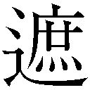
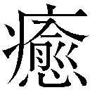

| 小学館電子全集 特別限定無料版 『中上健次 電子全集』 (中上健次電子全集) | |
| 中上健次 | |
| 株式会社小学館 (2018) | |
小学館ｅＢｏｏｋｓ
中上健次 電子全集 特別限定版
中上健次
地虫が鳴き始めていた。耳をそばだてるとかすかに聞こえる程だった。耳鳴りのようにも思えた。これから夜を通して、地虫は鳴きつづける。彼は、夜の、冷えた土のにおいを想った。
姉が、肉の入った大皿を持ってきた。
「奥さん、一杯いかんかい？」管さんが、ビール瓶を片手に持ち上げた。
「酒はあかんのやよ」と、姉は、七輪の横に皿を置く。姉は管さんにでなく、コップ一杯のビールで顔を赧 らめ、大きな体をまるめ、熱い息を吐いている彼の顔を見つめ、教えるように、「酒飲むと、頭が悪 りなる血筋やから、恐ろして、よう飲まんの。弟の秋幸が飲んでるのみても、心配になるん」と言った。べそをかくように姉は笑 をつくる。管さんは、はじめから飲むことを姉に勧めるつもりはない。人夫の自分たちにビールを供し、肉を取り寄せてくれたことに対する愛想の一つだった。
「飲みなあれ」と、彼の真むかいに坐った光子が、酔った声を出す。「たまに、親方の事を、忘れて、ドンチャン騒ぎしょうれ」
「あかん、あかん」姉は、笑を浮かべたまま首を振った。
「かまんのにい」光子は、よいしょ、と胡坐 を組む。桃色のフリルのついたパンティが彼に見える。それを察して、隣に坐った亭主の安雄が、「かくせ、かくせ」とわらいながら、光子のまくれあがったスカートをひっぱる。光子は、「減るもんでなし、みせたるぐらい、かまんやないのう」と安雄の体を腕でこづく。「言うとくけど、安雄、わしは、美恵ちゃんと違うからな。ちょっと知られた女やからな。これくらいなんやあ」
姉は、ビールの空瓶を持って、台所に行った。
玄関も窓もあけっぱなしだった。仕事を終え、親方の事務机が置いてある六畳の板間で、人夫たちが酒盛りをはじめた。その時、近所の子供たちが、何が始ったのだろうと、のぞきに来ていた。路地に面つきあわせて、車座になっているようなものだった。肉の焼けるにおい、親方の家の、鉄と土 埃 のにおいが、路地から吹き入ってくる風に払われる。すると隣近所の老人や後家が育てている草花のもの、溝のもの、それから急激にやって来た夜そのものの冷たいにおいがした。
安雄が、「飲め、飲め、頭が悪りてもかまんやないか」と、ビール瓶を持ち上げた。「誰もここに頭のええ血筋はおらんど」彼は、ビールを飲み干す。安雄は、注いだ。
「頭の悪り血筋は、わしのとこが一番」と光子が言った。肉をひっくり返していた箸 に、ぼっと火がつく。「そんなこと言うたりしたら、兄さんにどつかれるけどな、ほんまに」へっと舌を出す。
「親方は、頭は悪りことない。ええよ」藤野さんが言った。
「ええことあるかいな。あんたらは、自分の親方やから、ええと言うけど、あれ、正真正銘のわしの兄貴。都会弁で言うたら、うちの二番目のお兄さん。子供の時から、阿 呆 やなあ、と思て育ってきたんや。うちが誰よりもよう知ってる」
台所から、「光ちゃん、あんまり親 爺 の悪口言わんといてよお」と、姉の声がかかる。光子は、また舌を出す。ついでに、光子は、安雄に「誰がなんと言うても、あんたが一番、頭の悪り血筋やろなあ」と、頭をひとつはたく。「わしよりも悪りもんなあ。ひょっとすると、あんたの父さん、しょうもない女買 うて、梅毒でもうつされて来て、出来た子と違うか？」
安雄は、へらへらわらっている。ビールでは酔いが体にまわりきらないのか安雄は全然、酔っていない。酒に酔っていない安雄は、猫のようにおとなしい。陽気だ。仕事もまじめだった。光子に、いいように振りまわされている。しかし酔うと、安雄は変る。
姉が、彼を呼んだ。彼は、台所に行った。「おまえ、もう酒、それくらいにして、ちょっと母さんとこまで一緒に行ってくれん？ 夜道、おそろしから」
「なにしに行く？」と彼は訊いた。酒で、声まで熱いな、と彼は思った。
「法事のこと。父さんの法事のこと」姉は言った。「姉やんのガードマンになってえよ。おまえのその体みたら、誰でもおびえん者はおらんのやから」
「美恵ちゃん、怖 じくそたれやもんねえ」六畳の板間から、光子が口を入れた。「浜の家らで、絶対、よう住まんわ」光子は、人夫たちにむかって、姉がどのくらい恐がりか、しゃべりはじめる。浜の家は、光子たちの父親が残した家だった。父親が死んだ後、いつのまにか、運送会社の事務員をしている一番上の兄の古市夫婦が住みついた。光子は、よく、「わしかて父さんの娘や。父さん、わしを浜の家へ住ませたかったんや」と、古 市 夫婦をなじった。浜の堤防のそばだった。近くに防風林があり、共同墓地があった。
「なにを光ちゃんは、言うんなよお。怖じくそなもんですか」姉は言うなり彼の手をつかんだ。「行こ、行こ。姉やんのガードマンや。すぐ帰ってくる。光ちゃんが、ちょっとの間、みんなに酒のましといてくれる」
「怖じくそう」と光子は言った。「そこがまた美恵ちゃんのかわいらしとこ。あの、古市と、あの嫁みたいに、心臓に毛がはえたのとは違うんやから。今度、親方が、浮気したら、わしが、美恵ちゃんの代りに締め上げたるからな」光子は、安雄の肩に頭をもたせかける。
夜気は冷たかった。踏み切りとは反対側に路地を歩いた。
姉は、小走りだった。姉の背丈は、彼の肩までしかなかった。彼は上着を、腹巻のように体にまきつけた。ちぢみの下着についていた汗が冷え、皮膚に触るのが、心地よかった。路地に縁台を出し、その上に鉢植えを置いていた。花がにおった。路地をまがり、駅前からの通りを突っ切り、畑の中の道を歩いた。地虫が、また、耳鳴りのように鳴いていた。山の切り通しを越えた。牛小屋の前を通った。「父さんの法事に、また皆んな来る」姉は言った。それから、ふと思いついたように、「秋幸」と彼の名を呼んだ。彼は、なまくらな返事をした。「光子と、あんまり親しいにしたら、あかんよ。姉やんはいややから。きょうだいでごたごたするの」
「わかっとる」彼は言った。歩くたびに、作業着にした乗馬ズボンのこすれあう音がたった。大きく股をひらいて歩いた。地 下 足袋 は、音をたてなかった。前方から、軽自動車が走って来た。ライトが眩 しかった。行きすぎるのを立止って待つ間、姉が、彼をみていた。ガソリンの甘いにおいがした。「秋幸」と姉は、言った。「姉やんと、手つなご」姉は、彼の手を握った。
「なんや、赤子 みたいに」彼はふり払った。「怖じくそ、恐ろしんか？」
姉はまた手をつかんだ。「秋幸が、死んだ兄やんみたいな気したんや。秋幸も、兄やんみたいに、手、つないでよ。兄やんが生きてる時、いっつもこの道、手をつないで歩いて、母さんの家へ行ったんや。ここへ来ると、兄やんは、美恵、恐ろしやろ、恐ろしやろ、と訊くんや。こっちは全然、そんなことないのに。そう訊くから、思いついて、恐ろしなってくるの」くすくすとわらった。姉の手はつめたく固かった。
「うちの人と、うまいこと行っているのか？」ああ、うまいこと行っている、と彼は答えた。「うちの人、きつい事言うたりするんやろなあ」と姉は言った。返答に困り、彼は黙っていた。
親方の家から、ものの十分とかからなかった。母は、台所で、洗いものをしていた。母は、姉の姿をみつけるなり、「ああ、ええとこへ来たわ」と、タオルで手をぬぐいながら玄関に出て来た。「さっき、名古屋から、電話があったばかりや」母は言った。「名古屋の芳子が、また難し事言うんや、わしは長女や、と言うて、えらそうに文句つけるんや」母は顔をしかめた。
「義父 さんは？」姉は訊いた。
「おらん。寄り合いがあると言って、外へ行った。文昭は、アパートに帰ったし」母は、彼の顔をみて、「秋幸、早く飯食べて、風呂にはいれ」と言った。「ちゃんと風呂場に着替えも用意しとるから」母は、彼の顔が赧らんでいるのに気づいたのか、「また人夫と一緒に、酒のんだんか？ 明日になって、頭が痛いとか尻が痛いと言うても、知らんど」
「ほんのちょっとやねえ」姉が、彼を庇 った。
「つきあいで、ほんのちょっとじゃ」彼が言うと、「よっしゃ、ほんのちょっとやな」と母は、わらった。「まあ、秋幸も十五や十六じゃない、二十四にもなっとるんやから、ちょっとぐらい酒飲んでもかまんけどな」
「兄やんの死んだ齢 やもん」姉は言った。姉は彼の体をみまわした。
「おうよ」と母は言った。卓袱 台 の前に坐り込んだ。妙に、母の体から力が抜けていくのがわかった。姉の眼が、蛍光灯の光を映していた。
「さっき、ここへ来る時、兄やんがおる、と思たんやだ。びっくりしたよ」姉は坐った。「よう似て来て」
「おうよ」とまた母は言った。「秋幸みるたんびに、思うよ」
彼は、母と姉のはなしをききながら、飯を食った。母と姉は、父さんの法事の話をしていた。いまさっき、名古屋の芳子から、義父さんの家で、父さんの法事をするのはおかしくないか、と言ってきたのだった。父さんも義父さんも、彼には血のつながりはなかった。兄とも姉たちとも、母の血でしかつながっていなかった。土方請負師でもないのに、乗馬ズボンをはき、サングラスをかけたあの男が、彼の男親だった。獅子鼻で、体だけがやたら大きくみえるあの男。彼は、母や姉たちが、父さんの事を口にするたびに、あの男のことを想い浮べた。あの男とは、町なかで、たまに出会った。話しかけてきた。一言、二言、話を交わした。それ以上、話さなかった。彼は、体つき、顔の造りが自分と似ていると思った。そう思い、それを認めるたびに、一体そんな事がなんだ、と彼は思った。あの男に関する噂は、知っていた。新地に若い女を囲っている。いや、この姉は、それは確かに彼の腹違いの妹にあたる女だと言った。あの男が、相前後して三人の女に産ませた子供のうち、女郎の腹にできた娘らしかった。それが成長して新地にやってきた。このところ、男はとみに裕福になった。山林地主から山をまきあげた、土地をまきあげた、と噂が、耳にはいった。「ひどい人間もおるもんやねえ」と誰かが言ったのを、彼はいつでも、あの男を想い浮べるたびに思い出す。
飯を食い終っても、まだ話していた。二人の話が続いている間に、と、彼は、風呂に入った。体中が土埃のためにざらざらしていた。腰のあたりから、色がはっきり違ってなまっ白かった。腰から上は、日焼けして黒かった。湯を何杯もかぶった。
離れの四畳半が、彼の部屋だった。壁に一枚、女優のグラビアが貼ってあった。他になにもなかった。彼の遊び友達の部屋なら、ステレオも、自分一人のテレビも、サイドボードもあった。半月に一度ずつ、親方からもらう金で、それらを買おうと思えばわけないことだった。だが、部屋を飾りたてたり、部屋に物を置くのは、彼の性に合わなかった。高校時代もそうだった。高校卒業して、半年ほど勤めた大阪の建設会社にいた時も、寮には蒲 団 一組と、下着、衣服のたぐいしか置いてなかった。同僚は、けげんな顔で彼をみた。部屋で、寝て、起きる。いまでもそうだった。女のことさえ、考えたくなかった。やっかいな物一切を、そぎ落してしまいたかった。土方仕事から帰り、風呂に入り、飯を食い、寝る。起きて、顔を洗い、飯を食う。朝、日が入ってくる時は、いや、雨が降らない限り、ちぢみのシャツを着て、乗馬ズボンをはき、地下足袋に足を入れた。毎日毎日繰り返していることだった。日射しは濃かった。母 屋 では、義父と、義父の子の文昭が、飯を食っていた。
「いま、どこの現場やっとる？」と文昭が訊いた。彼は、答えなかった。代りに、パンツ一つの格好のまま、腕立て伏せを二十回、腹筋運動を二十回やった。乱れはじめた息のまま、風呂場横の洗面所で顔を洗った。母が、彼をみていた。「もうコンクリまで進んだか？」
「掘り方」と答えた。タオルで顔をぬぐいながら、「親爺っさんとこは、どこまで来た？」と彼が訊いた。
義父は答えなかった。代りに、文昭が、「こっちは、今日からコンクリじゃ」と言った。「今日は、馬力かけて一日のうち、打ち終らんと後がつかえよる。ええ天気になったし。せっかく、水、かいだしたのに、雨が降ったら、また水をかいださんならんのかと、心配やったけどな」文昭は、顔を前に突き出し、漬け物をこりこり音させて食べている。母が、仏壇のある間 から、洗った乗馬ズボンを持ってくる。「地下足袋も新しい方、洗っといたから、あれをはいてゆけよ」彼にぶっきら棒に言う。義父は作業着を付けたまま胡坐をかき、茶碗に茶を入れて飲んでいる。頭に混った白髪が、顔つきを丸くさせている。いつから白髪が目立つようになったのだろうか？ いや、いつから、全体が柔らかく優しくなったのだろう、彼には不思議だった。それがいつからだったか、彼には覚えがない。彼が文昭と、コンクリの時の持ち場で言い争いをして、それから義父とも妙に折りあいが悪くなり、義父の経営する土方の組を辞め、姉の夫の組に行ったころからかもしれない。その時、言い譲らなかった彼に、義父は、「文昭は、おまえより二つも齢上や」と言った。「わかっとるわい」と口答えした。そんな彼を、怒ることもせず、ただ義父はみつめたのだった。半年ほど勤めた大阪の建設会社を辞めて義父の組で土方をやりはじめた頃、文昭と一緒に彼は、スコップの柄で背中をぶったたかれたこともあった。もっとも文昭がいつも強く殴られた。追いかけまわされた。
「おまえみたいな性悪は戻って来いでもええ」と、逃げ出す文昭に義父はどなった。ちょっと子供に口答えされるのも、許すことなど絶対になかったのだった。
この家は、不思議な家だ、時々、彼はそう思った。母ひとり子ひとり、父ひとり子ひとりの四人で暮らしていた。文昭と彼は、義理の兄弟、母のない子と、父のない子の兄弟だった。いや、双方に、産みの親はいた。生きてはいた。ただ文昭はその産みの親から見 棄 てられ、親を母と思えず、彼もまたその男を父親などと思えなかった。姉たちや死んだ兄は、母の最初の夫の子供だった。母は、いまの夫、彼からは義父に当る男と再々婚するに当って、姉たちとは父親を異にする彼だけ、連れたのだった。
文昭の隣に坐り込んで、彼は飯を食った。彼の胸まわりも腕も、文昭の二倍近くあった。「月給もろたら、今度こそ、ええとこ行こうよ」文昭は言い彼の裸をみまわした。彼は母の顔をみた。
彼が、親方の家へ行くと、人夫は二人しか来ていなかった。すぐ、姉から鍵をもらって、倉庫をあけた。鉄と、炭のにおいがした。
駅一つ向うから通っている藤野さんが、さっそく、竹で編んだバイスケ、スコップ、じょれん、それにつるはしを小型マイクロの後部に積み込んだ。
姉が、「熱いお茶でも飲まんかん？」と勝手口から、顔を出した。顔が日に照らされ、むくんでみえた。女の人夫は、どうすると訊くように、彼の顔をみた。「飲む」と彼は答えた。
女の人夫と藤野さんが勝手口に腰かけ、彼は外に立ったまま飲んだ。奥から、「あと十分経ったら行くど」と親方の声がした。「しょうもないやつや、あいつら。酒飲ますと、明くる日は、休もうと思てけつかる」
「来るやろう」と女の人夫は言った。
「安雄のやつ、また遊びぐせがついたんじゃな」
親方の言い方に、一瞬、朝、めざめたばかりの二人が、抱きあっている姿を想い浮べた。彼は茶を飲み干した。光が当っていた。親方の家の前の路地は、日にさらされていた。溝のにおいがした。まだ親方の家の他に、起き出した家はなかった。路地を左にまがった踏み切りの横に、一本植わっている木が、ゆっくりと、葉をゆすっていた。彼は、その木が自分と似ているように思えた。なんの木か知らなかった。知りたくもなかった。花も実もつけなかった。ただ日に向って葉を広げ、風にゆれていた。それでいいと思った。花も実もつけることなど要らない。名前などなくていい。彼は、その木をみながら、夢を、いまみている気がした。
日が、ちょうど、むかいの家の屋根すれすれにあった。姉の家は、日の直射を浴びた。小型マイクロの腹にもたれて、彼は、姉の家をみた。家は、改造に次ぐ改造で、もう昔の面影はなかった。この家で兄は、首をつって死んだのだった。しかしいまは、その首をつった木もない。
六時半になってもまだ来ないのが、安雄だけだった。それで、現場へ行くついでに、田んぼを埋めたてた所に建った安雄と光子のアパートに寄った。彼が呼びに行かされた。親方は、「二人にええかげんにせ、と言うたれ」と、アパートの階段をのぼりかけた彼に言った。ドアをノックすると、中から、女の声がした。「だれ」と光子が顔を出した。彼だとわかると、「なんや、秋ちゃんか」と、わらいかけた。化粧を落しているせいか、青白くのっぺりした顔だった。
「ほらあ、すけべえ、むかえに来てくれたど」光子は、部屋の中にむかって言った。
光子は、ドアを開いた。安雄は飯を食っていた。赤い生地のカーテンが窓にかかり、サイドボードがあり、その上にぬいぐるみの犬が置いてあった。蒲団が敷いたままだった。掛け蒲団がめくれてずれていた。
「安う、のろのろしくさらんと、はよせんかい」光子は言った。
「一分、一分」安雄は言い、飯をほおばった。
「また親方に、わしが怒られる。ぼけえ、すけべえ」
「よう言うてくさる、どっちがすけべじゃい。なあ、秋ちゃん」安雄は言った。彼は苦笑した。くちゃくちゃ飯を嚙 みながら、安雄はやっと立ちあがり、地下足袋をはく。
「おまえはそれでまた眠ったらええかしらんが、おれは、これから土方じゃ、掘り方じゃ」
汗が裸の体から吹き出るのが、ここちよかった。つるはしを、彼は土にうちつける。現場が、小高い山の中ほどにあるせいか、土が他の所と違って柔らかく先から根元まで、土の中にすっぽりのめってしまう。地表は白く乾いている。だが、掘り起した土は、黒々と湿っている。それをシャベルですくいあげ、外に出す。側溝をつくるためだった。掘り方を終えると、すぐ、コンクリを打つ作業にかかるはずだった。手まわしよく、コンクリに使うバラスと砂は、運んであった。
「秋ちゃん、今度いっしょに遊びに行こな」
「遊びに行こ」彼は安雄に答えた。親方と一緒に、明日には、コンクリを打てるように、図面と首っぴきで水引きとメジャーで計ってまわっていた管さんが、「安雄らと遊びに行ったら、恐ろしど」と声をかける。
「なに言うとるんじゃい」
「最初は猫なぜ声で、どこのボンボンやらと言う顔して。うまいもんじゃ。ぼく、もう酒はだめです。女、それにひっかかって、外へ出たら、殴りつけて言うことをきかせとる。そばについとるのが恐ろし。ようあれで警察にひっぱられんもんやな」
「二回ひっぱられた」安雄は言う。一斉にわらう。親方がわらいながら、「安雄、秋幸に変な遊び教えたら、承知せんど」
安雄は、よいしょと声を掛けて土をシャベルで出しながら、「はい、はい」と調子よく相槌をうつ。「なあ、秋ちゃん、いつまでも監視付きの赤子とちがうのになあ」
女の人夫が携帯用のプロパンで、茶をわかしている。親方と管さんは、水引きを張っている。藤野さんは、畑仕事をでもするように腰を屈 め、じょれんで土をすくっている。安雄が、とびあがり、掘り進んだ穴からあがる。長袖シャツのまくった手首から、刺青 がのぞいている。安雄のわきがのにおいがした。彼は息をつめた。吐き気がした。彼は、区切りのつくところまで、土を掘り起しておこうと思った。つるはしを打ちつけた。見事に根元まで入った。引き起す。土はふくれあがり、めくれる。つるはしを置いて、シャベルに代えた。腰を入れ、シャベルのかどに足をかけ、土をすくった。外に、ほうり出す。汗が出た。まだ塩辛かった。いつも掘り方の時、塩辛い汗が出る間は、息をするにも力がいった。それが、水のようになってしまえば、体は噓 のように楽になった。掘り方に体が馴 れ、力を入れ、抜く動きにぴったり息が合っているのだった。特に掘り方は、好きだった。なによりも働いたという感じになった。この単純さが好きだった。現場の横の、切りひらかれていない山の雑木が、ゆれている。つるはしをふるう。シャベルですくいあげる。腕の筋肉が動き、腹の筋肉が動く。それは男らしかった。
彼は、安雄や女の人夫の話をききながら、区切りがつくまで、掘りすすめた。彼は、土方仕事が好きだった。他の仕事や商売よりも、貴いと思っていた。朝、日と共に働きはじめ、夕、日と共に働き止める。単純で、泥まみれになる仕事だが、思いがけない事にも出会う。豚小屋のそばの大溝を、さらって、石垣を築いた時だった。豚の屎尿が、底にたまっていた。体中が濡れた。屎 尿 にまみれた。屎尿のにおいと、ぬるぬるした汚物そのものに、親方も人夫たち皆んなも、打ちのめされたが、彼は平気だった。この時だった。大溝に、ソーセージを入れたコンドームが流れてきた。色めき立った。豚小屋の向うのアパートか建て売りのあたりか、それとも町方の家のどこかに、昼も夜ももだえる若後家がいるのだ、と結論した。一言、声を掛けてくれればいいものを、と安雄は言った。土を掘る。土はふくらむ。裂けてくだける。また、つるはしをふりあげ、腰を入れて、打ちつける。汗が、眼に滴になってたまっていた。ふっと、顔を上げた。一瞬、なにもみえなかった。額に巻いたタオルを取って、汗をぬぐった。体がじいんと鳴っている気がした。彼は、ひょいと上にあがった。
「清ちゃん、おれにも茶を入れてくれ」彼は女の人夫に言った。切りをつけた管さんの釣の話をきいていた女の人夫は、亭主にぶったたかれて欠けたという歯をみせてわらい、やかんから湯呑に注ぐ。「管ちゃんは、よう物知ったあるから」女の人夫は、湯呑を差し出す。
「まだまだやけどな。もうちょっと経って、奥へ行ったらヤマメがとれる」
「このまえ、高田の現場に親方とこのボクが遊びに来とった時、秋ちゃんが鮎 をとってきたげ」安雄は言う。「浅瀬におるやつに、石ぶつけて。頭ぐしゃぐしゃ。傷がどっこにもついとらんのに死んどるのもあったねえ。あれ、どうした？」
「ああ、おれが食ったった。姉やんとこへ持っていたら、気色悪りと言うさかに、塩焼きにして」
「おっきいん？」女の人夫が訊く。
「あたりまえや、おっきいよ。秋ちゃんがとったんやから」安雄は彼の顔にまばたいて合図する。
「ちっさいやつじゃ。小 鮒 みたいなやつばっかし」
彼がそう言うと、安雄は真顔で首をふる。そうかな、と独り言をつぶやくふりをする。そして腰を屈めたまま、股間のあたりで両手を使って、「このくらいあったと思ったんやけどなあ」とひとりごちる。
「安さんが言うと、何の話してたんかわからんようになる」女の人夫は言い、わらう。それにつられて、皆んなわらう。
彼は苦笑した。一人、妙にさめた。どこへ行っても、男と女のわいせつな話ばかりだと思った。親方が、笑を眼尻に残したまま、彼をみた。彼は眼をそらした。
木がゆれていた。ゆっくりと葉をふるわせていた。余計なものをそぎ落したい。夢精のたびに、そう思った。人夫たちの声の他に、音はなかった。振り返るとそこから、市の全体がみわたせた。駅が、ちょうど真中にあった。駅から、十文字に道路がのびて人家がかたまっていた。商店街もみえた。駅の左脇に小高い丘があり、その下が姉の家のある路地になっていた。そこから、彼の家まで、線路に沿った道をたどり、田圃 の道を行く。歩いて十分ほどの距離だった。彼の家から防風林まで、道が枝別れしながら一本ついている。防風林のすぐそばに墓地があった。そのならびに、古市の家がある。日を受けて白い屋根がみえる。防風林のむこうに、浜が見えた。海がみえた。町は海にむかって開いたバケツの形をしていた。日が当っていた。彼は不思議に思った。万遍なく日が当っている。とどこおりなく、今、すべてが息をしている。こんな狭いところで、わらい、喜び、呻 き、ののしり、蔑 む。憎まれている人間も、また、平然としている。あの男が、いい例だった。あの男は、何人の女を泣かせたろう、何人の男から憎まれているだろう。いつも噂にのぼったあの男も、それから、文昭の産みの女親も、この狭いところで生きているのだ。愕然とする。息がつまった。彼は、ことごとくが、うっとうしかった。この土地が、山々と川に閉ざされ、海にも閉ざされていて、そこで人間が、虫のように、犬のように生きている。
彼はしゃがみこんだ。材木の上に坐っていた親方が、体をずらし、ここへ坐れと言った。
「秋幸、昼を食ったら、管ちゃんとセメント取って来い」親方は、言った。
「長徳でか？」彼は訊いた。
「おお、そうじゃ、長徳」親方は言った。「あそこの女の子が、おまえにほれとると。なあ、管ちゃん」皆がわらいからかうより先に、彼は、「女は誰でもおれにほれるわ。男前やし。気はやさしいし」と一人で言った。
「ほほう。秋ちゃんは、男前に自信があるな」と安雄が言った。
昼までに区切りをつけようとして働いている時、光子が安雄の弁当を持って、上ってくるのがみえた。いつもそうだった。光子は、現場が、町に近いところは歩いて、遠いところは自転車で、弁当を持ってきた。アイラインを入れ、まっ赤な口紅をつけていた。髪にクリップをつけたままの時もあった。光子は、掘りあげた土をまわり、プロパンガスのそばに立った。ひとつ大きく息を吐いた。「安雄っ、ここへ置くど」と、最新型のジャー式の弁当を置いた。「やれ、疲れたあ」と、人夫の一人が置いていたセルロイドの煙草ケースから、一本抜きとった。口にくわえる。それから積みあげた砂利をサンダルで踏んで、マッチを取った。火をつける。ちょうど安雄がしていたように、しゃがみ込む。
「安雄、今日も、また、むかえに来てな、むかえに来なんだら、浮気するど」
「阿呆な」親方が言った。光子は親方の顔をみる。よく似ている、と彼は思った。
「安雄、まじめに土方をしてなあ、しっかり、かせげよ。土方してたら、船に、乗らいでもええんや。土方、しっかりしてたら、こうしていっつも、一緒におれるんや。弁当持って来たれるんや」光子は鼻からけむりを吐き、それで気がすんだというように、一口吸っただけの煙草を地面にこすりつけて火を消した。
「浮気もせんと。なあ、ちっさい兄やん、うちら、傍 からみたら、新婚ほやほやにみえるやろ？」
「しょうもないこと言うて」安雄は言う。また、安雄のわきがのにおいがする。
「しょうもないことではありませんよお」と光子は欠伸 する。「昨日、寝たのが三時。起きたのが六時。安さんが仕事へでてからうつらうつらしてたけど、隣の子らがさわぎまわって眠れへん」また欠伸する。今度は、口を手でかくす。「また今日も、バーへいかんならん」
「辞めたらええやないか」管さんと、掘ったところをはかっていた親方が、顔をあげた。「安雄が、働いとるのに」
「安さん、いつ何どき、土方いやや、また船に乗ると言い出すかもわからんしい」光子は、ふっと顔つきを変えた。
「アパートの家賃かて、払わんならんしなあ。ちっさい兄やんも、いっぺん古市兄ちゃんに言うたってよお。父さんが死んだかて、家も、土地も、一人占めにするな、言うて。誰も、トラック事故で、助かった方の右脚をくれとも言うてへんのやから。わしかて、父さんの子やからな。娘やからな。権利はあるんやから」
「知るか」親方はどなった。「そんなことばっかし言いくさっとったら、光子、いっぺん、どづきあげるど」
「そんなことばっかし言うてないけどよ」光子は、親方の見幕にあわてて弁解した。「バーになど働きに行きたない。いっつも、安さんと、昼も夜も新婚みたいに一緒におりたいと、言うてるの。欲を言うてるんと違う。人のことをないがしろにせんといて、と言うとるの。なあ、わしにあるのは、色欲だけや」
尻をおとしてしゃがんだ光子のスカートから、太ももがみえた。親方にどなられ、どうつじつまを合わせばいいのか、分らない様子だった。仕事のリズムが、狂ってしまった。彼だけではなく、親方を入れて、六人の組員全部がそうなってしまった。光子は、ぼんやりとしゃがんでいた。安雄は、黙って、シャベルで土をすくっていた。
ちょうど夕焼けが、始ったばかりだった。倉庫に道具をしまい込み、外の水道で手と顔を洗った。ついでに頭に水をかぶった。ぽたぽた滴の垂れる頭を下げ、裏口に行き、「姉やん、タオル。タオル取ってくれ」と言った。姉は、バスタオルを差し出す。二階から、姉の小学六年になる男の子が降りて来て、「今度、また高田に行こうよ。鮎、また、つかまえようよ」と言った。「ああ」とくぐもった声を出した。上りかまちに腰かけ、地下足袋をぬいだ。
「秋幸は、どうする？ ここですしを食べていく？」
姉が、大皿に、すしをよそっている。酢飯に、魚の煮た細い切身、しいたけ、れんこん、さやえんどう、数え切れないくらい入れ、混ぜあわせている。姉は、ラップで皿をおおう。紫のふろしきで包む。祭りの日、祝事の日、法事の日、その度ごとに、このすしを食べてきた。母もよく作った。
姉は、「はいむこうの家へ持ってて」と、わらいをつくって、ふろしきに包んだ大皿を渡す。ふっと、姉の笑が、感染する気がする。姉が、この家で、暮らしている。兄が死んだこの家で、暮らしている。彼は、姉の裸をみた時のことを思い出した。まだ子供が産まれて幾 許 も経っていない頃だった。姉は、一時、親方の女道楽で夫婦別れして、母の家へ来ていた。姉は風呂に入った。なんの気なしに風呂場をあけた。姉は子供を洗っていた。姉の背中は、右半分、ぽっこりくぼんでいた。子供の時の、肋 膜 の手術跡だった。夫婦別れしたのは、親方の女道楽などが原因ではなく、その背中のせいだ、と彼は思った。それから間もなく復縁した。
姉の子供が、川の瀬にいる鮎をつかまえるには、どんな道具を持っていけばいいのかと、彼にまつわりついた。親方が、風呂場からどなっていた。姉は、着替えを持って風呂場に行く。「秋幸、どうする？」と振り返り、急に思いついたように、「義父さんも母さんもおるから、やっぱし、むこうで一緒に食べたほうがええな」と言った。それから玄関をみて、「ああ、また」と言った。
彼は振り返った。そこに弦叔父が、立っていた。弦叔父は、兄や姉たちの父親の弟だった。
「美恵」と呼んだ。姉は、「はい、はい」と返事した。「ちょっと待ってねえ、うちの人、風呂に入ってるから」
「あれには用事ない」と姉の顔をにらみつけて言った。また酒に酔っていた。姉は、風呂場のドアをあけ、下着を置き、すぐに出て来た。台所の冷蔵庫をあけ、ビールを一本取り、「叔父さん、ビール持ってて」と言った。玄関に仁王立ちになった弦叔父をみて、姉の男の子供がくすくすわらった。しかし、弦叔父は、腕を組み、姉をにらみつけていた。彼が、姉の手からビールを取り、「ほら」とかまちに置いてやっても、ビールにみむきもしない。
「美恵、叔父さんの顔をみよ」弦叔父は言った。「悪いことをしてないか、人にうらまれる事をせなんだか？」
「してませんよお。さあビールを叔父さんに持って来たのに」
「叔父、ビール飲め」彼は言った。
「栓が開いてない」と言った。
男の子が、声をたててわらった。姉が、「これ」とたしなめる。
「たまには、美恵の顔みながら、飲みたい。叔父さんは、今日はここで、坐って、飲むど」
弦叔父の言葉をきいて、彼が立ちあがった。姉は、なにをするのだろうと、おびえた顔をした。彼は、姉のその気持ちがわかった。「コップ、コップ」と彼は言った。「栓抜きとコップ」彼は台所に歩いた。台所の窓から、夕焼けの終りかかった空がみえた。弦叔父の言う声が聞こえた。「おっきい体じゃね、雲突くみたいな大男じゃね。あの男にそっくりになって来たね」
「叔父さん、秋幸はわたしの弟やで」
「叔父も安心じゃ。美恵にこんな雲突くような弟がおるから」弦叔父は上りかまちに坐り込んだ。彼は、ビールの栓を抜いて泡のたれる瓶を渡した。弦叔父は右手でコップを持ち、左手でビールを注いだ。右手は、指がなかった。五本の指が、くっつき、大きく二つに裂けた具合だった。生れついてのものだった。それは、けもののひづめを思わせた。「美恵、なんどあったら、叔父に言うて来い。おまえの婿であっても、ようしゃせんと。妾 などまたつくったりしたら、死刑じゃ。叔父はこのあたりの帝王じゃからな」その手でコップを持ちつづけていることすら苦痛らしく、左手に持ちかえた。
「アル中の帝王」男の子が言った。姉が、「これ」とまたたしなめた。
「市役所との喧嘩はどうした？」彼は弦叔父の手から、眼を外した。
「あれもおれの勝ちじゃ。おれが市長に電話したら、一発で、黙った」弦叔父は、その手を振った。
「それでどうして取り壊しにおうたんじゃ？」彼はわらった。弦叔父は、市有地にバラック小屋を建てたが、人の噂になり、市役所から苦情が来た。弦叔父は、がんばった。一指たりとも役人に触れさせはせぬ、と、このあいだ会った時は、彼に、力説していた。ところが一日のうちに、バラックは壊された。市の有力者から内々で金を取ったから壊すことに同意したと、人々は言っていた。弦叔父は、コップのビールを、一口ずつ飲んだ。「おれが、判事じゃ。おれが法律じゃ」
風呂から出てきたステテコ姿の親方が、頭をタオルでこすりながら、わらっていた。
「叔父の法律は、めちゃくちゃやだ」親方が言う。
「めちゃくちゃなものか。おまえらでも、悪いことして、この美恵を泣かしとったら、すぐ死刑じゃ」と、一人でうなずく。
「叔父さん、うちの人を死刑にしたら、わたしがつらいから。他の人はかまんけど、うちの人だけ、もう悪りことせんと反省したらもっと軽うして」
「あかん。死刑じゃ。悪いことしたもんは、死刑」弦叔父は言う。そうして一人で納得して、うなずく。姉の反応をみながら、「な、な」と言う。
一体どこで酒を飲むのか、彼にも姉にもわからなかった。姉の、父親の、唯一人生き残っている兄弟だった。けもののひづめの手を持った弦叔父は、確か四、五年前まで路地の角で、女房と二人で駄菓子屋をやっていたはずだった。それまで彼は、この弦叔父の手をみたことはなかった。母から、姉たちの叔父に、どういう因果でか、ひづめの手の男がいるときかされてはいたが、彼は見た事がなかった。手をかくしていたのかもしれない。それとも弦叔父そのものが、外に出ることを嫌ったのかもしれない。酒に酔い、姉の家に酒を無心にくるようになったのは、三年前、女房が死んでからだった。
弦叔父が、一度、彼たちの家に来て、母に、酒をねだったことがあった。母は、一本、渡した。たしか義父の組の人夫たちのために買いおいてあった二合瓶の酒だった。たちまち飲み干し、もう一本くれと言った。そんな飲み方をしては、体に悪い、と言った。「体が悪いのはわかっとるんじゃ。おまえは、こんな手のおれが、亭主だった男の弟やというのが、気にくわんのか？」母は、怒りはじめた。手ェが悪りことと、なんでこのわしと、関係がある。その亭主は死んだ。死んだ者となんでこのわしが関係ある？ 母は、まきを握った。女やと思て阿呆にするな。どつきあげたろか、と、ふりあげた。ちょうど居あわせた文昭が、とめた。後になって姉が、そのことを知り、最初は、母のむごい仕打ちをどなり、なじってやると息せき切って、母の家へ出かけた。ちょうど彼が家に帰ると、姉は、仏壇のある間の壁に顔をむけ、背をまるめ、泣いているところだった。
「美恵」と弦叔父は言う。「悪りことするなよ」
はい、はい、と姉はうなずく。「悪いことなど、全然してませんよ」姉はビールをコップに注ぐ。
弦叔父が、姉の子供の顔をみつめる。眼をまるめ、おどけてみせる。「坊、叔父が話したろか？」男の子はうなずく。「あそこに山があるやろ、あそこに天狗がおるど。叔父は、いっつもその天狗と話しとる。天狗の顔は赧い。叔父が酒飲んでいくと、叔父を自分の仲間やと思て、いろいろ教えてくれる。なんでも知っとるんじゃ。今日は、あいつとあいつが喧嘩した。あいつが悪いことした。あいつが、死ぬ、と」
「噓 ばっかし言うて」と彼はわらった。不愉快になった。姉が気がいいことにつけ込んで、姉を苦しめている。弦叔父がビールを飲み尽したのを知り、親方は姉にもう一本出してやれと言った。姉は、冷蔵庫から取り出した。彼は立ちあがった。姉の家の、小さな仏壇に、兄と姉たちの父親の写真が飾ってあるのをみた。姉たちの父親と、弦叔父は似ていた。写真を老けさせ、黒ずませ、皺をつくれば、弦叔父じゃないか、と思った。
すしを持って、親方の家を出た。夕焼けは終っていた。わざわざ遠まわりして、新地をとおった。体に甘い疲れがあった。客引きの女達が、狭い路地に立っていた。あの男、彼の男親に当る男の、何度目かの新しい若い女とも、女郎の腹に産れた彼の腹違いの妹とも判別つかないが、新地の路地の店に出ているという噂を彼は思い出していた。いつか、その店に行ってみようと思った。いま、彼は、その女に会うつもりはなかった。会ったところでどうにもならない。どうするてだても思いつかない。
溝のものとも、小便のものともつかないにおいが、新地の路地にあった。「お兄ちゃん、ちょっと寄らへん」と女の一人が声を掛けてきた。彼は、返事をしなかった。「寄って行っててよ」と女は、彼の腕に手をまわした。酒と化粧のにおいがした。金はあった。酒を飲み、女を買う相場の金は持っていた。だが、女を知らなかった。知りたくなかった。余計なもの、やっかいなものに自分をかかわらせ、汚したくなかった。いや、ひとたびそれを知ると、とめどなくのめり込み、どろどろになり、女とみれば見境いなしに手をつけたあの男と同じになってしまいそうな自分が不安だった。「安うしとくから寄っててえ」女は、手を引いた。路地の角の木が、ゆれていた。彼は息苦しかった。あと一つ、腕を強く引いてくれ、と彼は思った。そうすれば、今日こそは酒をのみ、夢の中ではなく、現実に女を抱く。女を初めて経験する。あふれる。しかし女は腕を離した。「金がないんじゃ」と彼は女に言った。女はそっぽをむく。
兄が生きていたころ、よく酒を飲んだという店があった。その二軒隣の店『弥生』が、それだった。そこを足早にとおりすぎた。その店に入ることも、その店の前を通りすぎることも誰かにみられ、禁じられている気がした。自分の地下足袋の足音を確かめながら、家にむかった。夜の闇の中で、白い花が咲いていた。それは、人間の顔にみえた。兄は、彼の今の齢で死んだ。母や姉が言うように、自分が兄と似ているとは、思えない。彼は、大きな体だった。手も足も、ごつごつしていた。眼は、板にくり抜いた穴のようだし、鼻は、獅子鼻だ。そのような体、そのような顔の彼が、兄に似ているとは思えない。兄は、優しい顔の男だった。あの姉たちの父さんや弦叔父の顔と母の顔をかけ合わせたものが、兄の顔だった。おれの顔は、あの男の顔だった。世の中で一番みにくくて、不細工で、邪悪なものがいっぱいある顔だ。彼は思った。その男が、遠くからいつもみている。いつもおれの姿を追っている。彼は立ちどまった。男が、女郎に産ませたその子に会ってみたいと思った。『弥生』へ行って、確かめてみようかと思った。だが、もし腹違いの妹だとわかっても、どうなるわけでもない。彼は種違いのきょうだいの中で育ち、いま、母の三度目の夫の義父を、親爺と呼び、その子供を、兄と呼んで暮らしていた。女郎の子は娼婦になる。土方の家で育つと土方だ。それが一番てっとり早い。足早に、彼は、歩いた。幾種類もの兄弟、幾種類もの父や母に、自分がとりかこまれているのに、自分のような気持ちの人間が、たった一人だということが、噓 のような気がした。
土方は、彼の性に合っている。一日、土をほじくり、すくいあげる。ミキサーを使って、砂とバラスとセメントと水を入れ、コンクリをこねる時もある。ミキサーを運べない現場では、鉄板に、それらをのせ、スコップでこねる。でこぼこ道のならしをする時もある。体を一日動かしている。地面に坐り込み、煙草を吸う。飯を食う。日が、熱い。風が、汗にまみれた体に心地よい。何も考えない。木の梢が、ゆれている。彼は、また働く。土がめくれる。それは、つるはしを打ちつけて引いた力の分だけめくれあがるのだった。スコップですくう。それはスコップですくいあげる時の、腰の入れ方できまり、腕の力を入れた分だけ、スコップは土をすくいあげる。なにもかも正直だった。土には、人間の心のように綾というものがない。彼は土方が好きだった。
その日、午後から雨だった。仕事を切り上げた彼は、雨がうっとうしく、早々と家に帰った。義父も文昭もいなかった。風呂を沸かして入り、一人だけ随分早い夕飯を食べた。母は、さきほど雨が降り出す前まで、姉が来ていた、と言った。「これですっぱりするよ」と言った。長いこと、母は、最初の夫、姉たちの父親の法事のことを思案していたのだった。その法事までにあと一カ月になった。母は、「名古屋の芳子が」と下 穿 ひとつのまま飯を食っている彼に言う。「自分らの父さんの法事やから、美恵の家でやると言うてきたけど、美恵の家でやったら、わしの気持ちはどうにもならん」母はふっと声をおとす。「芳子から電話きたときは、泣けてきたよ。父さんの法事は、この家でやって、美恵に全部取りしきらす。この家に来る坊主でなしに、むこうの家の坊主を連れてくる」母は立ちあがり、台所のガスを消した。
「どうでもええやないか、そんなこと」彼は言った。
「どうでもええような事やが、しちめんどうくさい関係やからなあ」母は坐り込む。彼はその母を、孕 んだ犬のように思った。外は細い雨だった。家の中だけが、薄暗い。義父のズボンが、かもいに、ひっかけられている。遠くで、エンジンを空ぶかしする音がしていた。
飯を食い終ると、まったくすることはなくなった。仏壇とテレビを置いている部屋に横になった。母が、枕と、夏ものの掛け蒲団を出した。母は、枕元に坐り込んだ。「あと五年の辛抱じゃね」と母は言った。「その間に嫁ももろて、子供もつくって、それから独立したらええ。それまで見習いじゃよ。人夫と一緒になって酒をのんだり、バクチをしたりせんと。母さんはそれが一番心配じゃ、酒のむのと、バクチをすること」
「酒はのめんし、バクチはやらん。好かんのじゃ」
「好かんことあるかあ」と母はわらう。「おまえの顔みたらすぐわかる。酒もバクチもやってみたい」
「そそのかしとるのか」彼は言う。
「阿呆を言うて。どこの親が、子供に、酒やバクチをすすめる。酒にもバクチにも、わしほどこりごりしたと思ってる人間が、他におるもんか」母は、怒ったような顔で、わらう。「人夫らと同じこと思ってたら、請負師にはなれんねえ。義父ちゃん、みてみい」母は言う。「酒もつきあいでしか飲まんし、バクチはやらん。おまえがいっぱしの請負師になって、兄さんもいっぱしになって」母は文昭のことを兄さんと言う。「二人で、組んでこの義父ちゃんのあとを継いでもええし、それが嫌なら、自分だけ一人で、機をみて独立したらええ。母さんが、後押ししたる。それがわしの務めや」
「いまごろ、あいつと一緒に暮らしとったら、おれは、大地主の坊ちゃんやな」
ふと口をついて出た彼の言葉だった。母の表情が一瞬に変った。「あんな者、あんな者は、よう行かへん。絶対によう行くものか」母は、彼のすぐ後にあの男が居るように言った。「人の物をふんだくって、自分の物にする人間らは。あれの噂きくたびに、おまえの体半分割って、血も半分、出したりたいと思うよ」母は興奮した。彼は、母の顔をみつめた。
その時、玄関の戸が、激しく開く音がした。母が振り返った。義父が、雨にぬれた作業着のまま、入ってきた。「えらいことじゃあ」と母の顔をみるなり、言った。「とき、えらいことじゃあ」義父は言い、声を呑んだ。「古市が刺された」義父は、一刻の躊 躇 もならないように、整理ダンスの上に置いてあったモーターバイクの鍵を取る。
起きあがった。「誰に、やられた？」と彼は訊いた。
「安雄じゃ」義父は言った。「これからすぐ病院へ行ってくる」
「美恵は？」母が訊いた。
「わからん」と義父は言った。「おれはすぐ病院へ行く」
「美恵は？ 義父ちゃん、美恵は？」母が言った。「わからん、わからん」と義父は言う。
雨が降っていた。彼は、傘も持たないまま、外に出た。ズボンとＴシャツ姿で外にとびだし、姉の家に走った。彼は、妙に自分が冷静であるのを知った。すぐ息が切れた。それでも走った。細い粒の雨が、顔面にかかった。わからなかった。突然、何故、そういうことがおこったのか。親方の兄、光子の兄の古市が、光子の亭主の安雄に刺された。義足をつけた古市を、人一倍健康な安雄が、何故、刺したのか？ 義父はみたのだろうか？ それとも誰かに聞いたのだろうか。小高い丘の緑が雨に濡れて、ひかっている。彼は、まず本当かどうか、確かめなくてはならないと思っていた。光子と古市の兄妹仲が、光子と親方、親方と古市の間とは比較にならない程、悪いことは知っている。だが、どうして安雄が刺さなくてはならんのか？
姉の家には、男の子が一人居ただけだった。男の子は、畳に寝ころがり、漫画本を読んでいた。彼は、拍子抜けした。ずぶ濡れのまま、入り込んだ。姉の家に、人が集まり、警官がいる、姉が動転して、髪ふりみだしただ泣いている。そう彼は想像していた。
「姉やんは？」と彼は男の子に訊ねた。顔もあげず、「病院」と答えた。
「ほんまに刺されたんか？」
「うん」と男の子は、初めて顔をあげた。「血が、どくどく出て、捕 った」
「誰が」と彼はどなった。
「安雄おじさん。古市おじさんは、病院へ入った。皆んな病院へ行ったよ」
彼はためらった。びしょ濡れだった。雨が降りつづいていた。だが空は変に明るかった。煙草を吸った。安雄が、古市を刺した。血がどくどく流れた。それを実際見なくても想像できる。刺されれば、血が出る。血が出すぎれば、死ぬ。古市のことは、どうでもいい気がした。それより、姉が、心配だった。もともと体が弱かった。子供の頃からいままで、すぐ熱を出し、吐いた。極端に清潔好きで、よくこれで土方の女房がつとまると思うくらいだった。髪の毛が一本飯の中にまじっていたと言っては青ざめ、羽根をむしった鳥の皮を見たと言っては、不快になる。その姉が、血を大量に流す人間をみて、どうしているのか、彼には気 懸 りだった。その姉の傍 に居てやろうと思った。バスタオルで頭をぬぐった。そして彼が顔をバスタオルから離した時、いつ現われたか、外に、こうもり傘をさした弦叔父が立っていた。
「美恵、美恵」と呼んだ。
「叔父、姉やんはおらんど」彼は、窓から顔をつき出して言った。「今日は、酒飲もと思ても、あかんど」
「美恵、美恵」と弦叔父は呼んだ。まっすぐ立つことも出来ず、ふらふらしていた。サンダルをつっかけた素足が、ひっかき傷だらけで赤く、泥でぬれている。
「おらん、おらん」彼は言った。弦叔父は、彼を無視した。「美恵、悪いことしてないかあ、人にうらまれるようなことをしてないかあ」その声をきいて、男の子が、ぐすっと鼻でわらった。
姉は病院にいた。彼をみつけるなり、「ああええとこへ来た」と言った。姉は、彼を、看護婦の控室に連れて行った。控室に、古市の嫁と小学二年生の女の子がいた。嫁は、女の子を抱いて泣いていた。女の子は、犬のように眼をひらいて彼をみた。「ねえさんをわたしの家へ連れて行って、休ませてやって」しかし嫁は、「いやよお」と首をふった。「お父ちゃん、死んでしまうのにい。いやよおっ」嫁は叫んだ。女の子は、彼が、父親を刺した男だとでも言うようにみつめた。涙ひとつ眼に浮かべていない。
「大丈夫、死なへん。いま輸血しとるんやのに」
「いやよお、お父ちゃん、死んでしまうよっ」また首をふった。
「大丈夫や、死なへん」姉はきっぱりと言う。嫁は、お父ちゃん、死んでしまうよお、と言いつづける。彼は、姉の後に立っていた。「皆んな、輸血のために血をとってくれたんやのに。死ぬことあらへん」姉が、嫁をなぐさめる。姉が、たのもしくみえた。
姉の後について部屋を出た。古市は、手術室にいる、と姉は言った。手術室の前で、立ちどまった。「どうする？」姉は訊いた。彼は、首をふった。
「あとで母さんに頼んでくれん？ ねえさん、あんなんやから、当分、病院におらんならんから、子供の世話を頼む言うて」
「よっしゃ」と彼は答えた。
「むこうの家で御飯と風呂だけ入れてやって。寝るのは、こっちの家でええから」
「学校へ行くのに、朝飯はどうする？」
「そうやなあ」と姉は思案する。「ええわ。わたしが、暇みつけて、行って世話するわ。今日だけ、むこうの家で夕御飯、食べさせたって」
一体何が原因なのか、彼にはわからなかった。突然、起ってしまった。安雄の姿を想い浮かべた。いや、安雄の体が動く時にわきの下からもれるわきがのにおいを想い出した。昼、雨が降り出すまで、一緒に土方をやっていたのだった。いつもと変りはなかった。コンクリを昼から打てるように、準備をした。そして一段落した。光子が、弁当を持って、現場の山道を登ってきた。光子がくると、人夫たちは、途端に軽口になる。光子が帰ってから、昼にした。空の雲が厚く日はみえなかった。ただ風だけが吹きつけ、いつものように木の梢、葉むらが、揺れた。準備をし終り、いざこれからという時、雨がふってきた。ついてなかった。一日延ばすことにした。仕事を切り上げた。安雄には、一体、それからなにがあったのだろう。安雄は刺す。古市の体から血が流れ出る。また刺す。古市の嫁と、女の子が、声をあげている。
彼は、待合室のベンチに腰かけていた。薄い髪を結い上げた小さな老婆が、受付と話しているのをみていた。濡れた服が、乾いてくるのを知った。奥の方から、義父が歩いてくるのがみえた。彼は立った。義父は彼に気づいた。
「えらいことじゃな。ありゃ、あかんど。輸血しとるけど。助かっても、足切らんならん」
「どこを刺された？」声がくぐもっている。
「足じゃ、足、ふともも。何回も刺されとる。助かっても、達磨 といっしょや。むごいことするもんじゃ」
姉が、廊下を小走りにやって来た。「義父さん、母さんに心配せんように言うといて」姉は言った。義父はうなずいた。
安雄は、古市の、義足をつけた方ではなく、まともな方のふとももを、三回刺していたことが、後になってわかった。光子にそそのかされたのだ、と皆は言った。彼が、親方の家の倉庫に土方道具をしまい込み、安雄と別れてから、わずか三時間の間だった。三時間に、なにもかも変ってしまった。
古市は、死んだ。葬儀は、浜の古市の家で行われた。彼は、姉をみていた。姉の肩に力がなかった。ぺったりと坐り込んでいた。
むし暑かった。坊主が読経していた。窓をあけはなっているが、その前に、花輪が飾ってあるので風がさえぎられた。彼は外に出た。浜の家の、道のむこうに、丸太が置いてあった。電気ノコギリの音がした。彼は、煙草に火をつけた。しばらく、電気ノコギリと読経の音をきいていた。日射しが濃く、まぶしかった。ふと、彼は思った。兄は、母とおれを、安雄がやったように刺し殺したかったのだ。何度も、何度も、包丁を持ってやってきた。鉄斧を持ってきたこともあった。昨日の事のように、覚えている。彼は、十二だった。兄は、二十四歳、いまの彼の齢だった。早朝で、まだ雨戸を閉め切っていた。電燈はついていなかった。母の声で、眼をさました。蒲団の上に、母は、寝巻き姿のまま正坐している。義父は、その横で胡坐をかいている。彼と文昭は、隣の部屋で寝ていた。兄が来ているのがわかった。また、泥酔している。
「母さんと秋幸が幸せに行くのが、憎いんか」
「おう、憎いんじゃ」兄は言った。「おまえら二人だけ、好き勝手なことさらす」
「二人だけ言うて、秋幸はまだちいさいのに。おまえも美恵も芳子も大人やないか」
「それで、ほったらかしてええんか。おまえが好き勝手なことさらして、秋幸だけ連れて、他の子供はほっといてええんか」
「秋幸は子供やのに。おまえら大人やないか」
「おまえは、昔からそうやったなあ。おまえは、おれら兄妹だけ、放ったらかして、秋幸だけ連れてこの男と逃げようとしたな。ちゃあんと覚えとる。まだ芳子も美恵も、いまの秋幸ぐらいの時じゃ。おれらは忘れてないどお」兄はどなる。語尾がふるえる。「ぶち殺したろかあ」
彼は、悲しくはなかったが、泣いてみた。そうすれば兄の怒りがおさまるかもしれない、と思った。隣の蒲団で寝入っているはずの文昭が、手をのばして、彼の口をふさいだ。「秋幸、おまえもここへ来い。裏切り者」兄の声がした。寝たまま文昭が、手で、外へ出るなとおさえていた。彼は、文昭の手を払った。襖 をあけた。兄は、包丁を持っていた。「そこへ坐れ」と、同時に畳に包丁をつき立てた。彼は泣くのを止 めた。
「われら、二人だけ幸せになって、他の子供のことは、どうなろうとええんか」
「大人やないか」
「子供を犬の仔みたいに捨ててもええと言うんか。嫁入りもさせんと、放っといてもかまんのか」
「もう大人やないの。貧乏で嫁入りも大きく出来なんだけど、ちゃんと世帯持ってるやないの」母は言う。「憎いんやったらなあ、母さんと秋幸を殺せ。殺すんやったら、殺せ」
「おう、殺したる」兄は、包丁を畳から抜いた。握った。義父が、「やめよ、やめよ」と気抜けた声で言った。「うるさい」と兄は、また畳に包丁をつき立てた。「おまえに、おれはつべこべ言われることない。黙っとけ」
「殺すんやったら殺したらええ。わしも、こんなおまえをみるのはつらい。自分の腹いためて産んだ子に、憎いと言われる。自分の腹痛めて産んだ子が、憎みあふれかえって殺そうとするの、つらい。母さんは、おまえにまかせる。刺すんやったら、刺してもかまん」母は言った。「義父さんと文昭にも、はずかし」
その時は、それですんだ。姉が、兄と一緒の時もあった。姉は、兄をとめていた。母は、兄よりも姉にむかって、「おまえらはそんなことするんじゃ、わしの子と違う」と言った。姉が一人、身をもみしだいて泣いた。その時も、彼は、姉が、自分のことのように泣くのが、不思議だった。
その年の女の節句の朝、突然、兄は、家の庭の木に首をつって死んだ。姉は、家にやってきた。寒い日だった。母に物も言わず、いきなり抱きついた。姉の口からもれる息が白くみえた。呻きが声にならず、白い息になっている。彼は二人をみていた。あまりにあっけなかった。あんなに繰り返し繰り返し、刃物や鉄斧を持って、母や彼を殺しに来たのに、血をみることもなく、憎んでいる彼や母の悲鳴をきくこともなく、ぷっつり死んだ。それからちょうど十二年目だった。彼は、二十四歳になった。兄が死んだ年に生れた姉の男の子は、十二歳になった。なにかが大きく変った。そしてなにかが、十二年前の元にもどった。
彼は、浜の家をみつめた。日を受けていた。ここで人が刺されたとは、納得できなかった。一体、なにが原因で、義足の男のまともな方の脚を、三回も刺したのだろうか？
十五ほど花輪が並んでいた。彼は、入口に立って中をのぞき込んでいる近所の子供をみた。珍しそうだった。
「秋幸」と声がした。文昭だった。「親爺、中から呼んでくれ」と言った。
「なんじゃ、なんど用事か？」
「仕事のこと」と文昭は言った。彼は立ちあがった。家の中の仏壇近くに坐った義父に、「ちょっと」と言った。柩 が、眼の前にあった。柩そのものが、古市の死体にみえた。古市のわらい顔の写真が、仏壇にあった。義父のそばに、母がいた。母の隣に、姉が、坐っていた。姉は、母にもよく似ていた。母がやせて、若返れば、姉そっくりになるはずだった。義父は、外に出た。文昭が、道具の数が足らないと言い、どこに電話して持って来させればいいのか、訊ねた。
「おまえは、そんなことまでわからんのか」義父は言った。「ヤマキに電話したらええ。遊ぶことばかり一生懸命で、ちっとも仕事に頭がいかん」
「そんなことまで、おれが分るか。自分で全部やってて、いきなりおれにやれと言うても」文昭は小声で言った。
「なにをえらそうに」義父は、広場にとめたライトバンの方に歩いていく文昭に、言った。数珠 を片手に持ったまま身を屈め、小石をひろった。「親にむかって、口答えしくさって」はやく行け、と言うように、義父は石を投げた。石は文昭の尻のあたりをとんだが、はずれた。
ちょうど霊柩車が、橋からの道をのろのろやってきた。義父が、家の前に立って、「ほらあ、どいたらんか」と手を振ってどなっていた。文昭はライトバンのエンジンをかけ、勢いよくバックし、クラクションをひとつ鳴らし、方向転換して、浜の方へ走り抜けた。その後に、霊柩車が、バックで入った。
夢をみていたはずだった。覚えていようと夢の中で思った。だがめざめると、忘れていた。文昭が、彼をみてわらった。日が当っていた。なにかが変ってしまったように思っていたのに、いつもの朝と変りはない。「秋幸、はよせんかい」と母が言った。死んだものに、この朝がないというのが不思議だった。干物を焼いたにおいがしていた。兄に、あの時、刺されて死んでいたら、自分もこの朝を見ることも、感じることもない。
姉の家は、閉ったままだった。以前にはなかったことだった。彼は、迷った。戸を叩いて、起そうかと、思った。葬儀の翌日だから、休むのだろうか、と思った。それでなくとも、雨の日、安雄が古市を刺してから、仕事がめちゃくちゃになっていた。今日中に、コンクリを打ってしまわなくては、次の段取りが立たなくなる。彼は思った。閉ったままの硝子戸の前に坐り込んだ。犬が一匹、路地の横から出て来た。親方がいなくとも、仕事は出来る。彼と、管さんと、藤野さんと女の人夫でやればいい。倉庫の鍵と、車の鍵があればよい。踏み切りの方から、藤野さんが歩いてくるのをみつけた。彼は、安 堵 した。仕事をすることによって、日と共に働き、日と共に働きやめるいつもにもどれる。そう思った。人が人を刺すなどということは、あってはいかん。そんなことはすぐ忘れ、考えないことが、一番よい。
藤野さんは、親方の家が、雨戸を閉めたままなのに気づき、「親方も、奥さんも、疲れとるんやで」と言った。
「コンクリ打ってしまわんと」彼は言った。
「そのうち起きてくる。ちょっとほっといたら」
女の人夫と管さんが来た。「さあ、今日から、わしら、仕事じゃ」管さんが言った。「安雄も、思いきったことしよって」
「殺すつもりと違 ごたんやろ」女の人夫が言う。「包丁持って、おどしに行くつもりやったらしい」
玄関の硝子が、かしゃかしゃ鳴った。鍵が内からはずされ、戸が開いた。親方が、上半身裸、ステテコ姿のまま、顔をみせた。「おう、集まっとるねえ」と眼をこすった。「美恵、後で、母さんに来てもらうように言うとくさかな。それに医者にも、来てくれるように電話しとく。今日は、寝とけ」
それから、人夫の顔をみて、「昨夜から熱を出しとるんや。体弱いから」と弁解した。顔が腫 れぼったかった。
「病気か？」彼が、訊いた。中から、「風邪引いたんやよ」と姉の声がした。喉に痰がひっかかったような、しゃがれ声だった。
「疲れたんやろ」親方が言った。「秋幸、倉庫をあけてくれ」と鍵を、彼に渡した。鍵はつめたかった。
妙におとなしかった。十時の時も、昼も、三時の休憩の時も。軽口を言っても、すぐ、ひそひそ声を低めてする噂話のようになった。安雄がいないせいだった。実際、一人で四人分ほど、陽気にはしゃぐ男だった。腕に刺青をしてはいたが、けっして人を刺すような人間だとは思えなかった。
人夫の一人は、親方が現場を離れている隙に、また、「光子にそそのかされたんじゃ」と言った。安雄は巻き添えを食った。安雄こそ被害者じゃ。人夫たちは、刺されたあげくに死んだ光子の一番上の兄の古市より、刺した安雄に同情した。「これでまた安雄は当分、光子に会えんね。今度は、船に乗っとるより長いど」管さんは言った。
噂話を楽しんでいる人夫たちが、彼には理解できなかった。もし、彼が、人を刺しても、その後、こんなふうに噂話をするのだろうか？ 彼はミキサーのエンジンをかけた。バラスをかごに六ぱい、砂を三ばい、セメントを小バケツに一ぱい、それに水を、ミキサーの中に放り込む。六・三・一の割合だった。ミキサーは程よく、こねまわす。彼が、ミキサーの担当になった。藤野さんが、一輪車にこねあがったコンクリを受け、持ってゆく。親方と管さんが、コンクリをならす。女の人夫は、水の汲 み役と砂のかき役だった。「柔らかいなあ」と藤野さんが言う。それを彼は女の人夫に伝令する。ミキサーの中に、女の人夫は、砂を三ばいとちょっと入れ、水を入れる。彼が、後を受け、セメントをバケツで放り込み、バラスを多めに入れる。追いたてられるようにして、次のために、空いたかごにバラスをかき、バケツにセメントを入れる。安雄がいて、それぞれの持ち場に不足なく人夫がついている時は、彼は、セメントと水をバケツに入れるだけでよかった。ころあいをみて、彼は、女の人夫が用意した砂と、安雄が用意したバラスをミキサーの中に入れ込んだ。義父の組にいた時、文昭と言い争いになったのは、この持ち場のことだった。コンクリを打つ時の要にあたる場所だった。柔らかくも固くもなく、コンクリをつくった。親方は、よく、天下一品だとそのコンクリをほめた。だが、今日はまるっきり勝手が違っていた。コンクリを打ち終ったのは、五時をまわってしまっていた。最後まで、いつもの調子を取りもどすことができなかった。
「安さんの代りに、一人連れてこな、仕事にならんの」女の人夫が、親方にそう言えというふうに、彼の顔をみる。彼は道具を集める手を休めなかった。コンクリを打ち終ってしまうと、当分、この現場には、来ないはずだった。坂をならし、石垣を築く女子高校の現場に、明日からかかる予定だった。この現場には、親方と管さんが来る。二人で、二日もあればかたがつく。ミキサーは、ここに置いたままで、道具屋のヤマキに電話すれば、引き取りに来る。彼は、ヤマキの親爺を思い出した。管さんと、道具を買いに行ったり、リースのブルドーザーやダンプを借りに行った時、ヤマキの親爺に、これがあの男の子供の一人か、と憎々しげに見られている気がした。ヤマキが、あの男に手形をパクられ、乗っ取られそこなったのは、このあいだのことだった。
親方の運転する車に乗って帰った。彼は助手席に乗った。親方は、黙っていた。車は、家までの最短距離を走った。それまで三回に一度は、安雄のために廻り道をして、アパートのある道に出た。「親方、今日は光子、機嫌悪かったさか」安雄はそう言い、途中で降ろしてくれと言ったものだ。しかしそんな時、親方は、わざとアパートの前で車を停めた。
カーブを曲ると、繁華街だった。信号を右に折れ、一直線の道を走った。スピードメーターの針が七十を上下していた。朱と黄金色に雲が変っていた。さっきまで木の緑がみえていたのに、山は、暗く黒く変った。不安だった。誰かに、体の一部をしっかり押えてもらいたい気がした。なにかが変化した。なにかが破けた。それは、一体なんなのだろうか？ 彼は、体に疲れがあるのを知った。親方も、管さんも、藤野さんも、それからよくへらへらわらう女の人夫も、黙り込んだままだった。
葬儀の翌日から、そのまま、姉は、風邪と疲労のため、寝込んでしまったのだった。突発した事件のほとぼりがさめないうちだったから、人々は、姉に同情する。刺した本人や刺されて死んだ古市より、風邪と疲労と心労で寝たっきりになった姉こそ、事件の一番の被害者だと言った。医者は、肋膜の再発だ、と、みたてた。それを聞いて、姉は泣いた。姉にしてみれば、なによりも一番恐ろしい病気だった。それが彼には、わかった。
姉は、満四歳の頃、肋膜を患ったのだった。医者は、助かる見込みはほとんどない、と言った。その話は、当の姉から、繰り返しきかされていた。姉の父親は、仕事から帰ると、上着を脱ぐのもそこそこに、熱に浮かされ、ただ息をするだけの、ちいさなやせこけた姉の体を、さすった。「かわい、よ。かわい者、よ」父親は言った。声をあげて、泣くこともできず、ただ息をもらして呻くだけだった。父親は、山を売った。その金で、姉は背中の肋骨を三本取り、手術して、生きかえった。約一年ほどしてその父親が死んだ。財産は一切なかった。姉は、その話をたぶん母から聞かされたのだろう。彼に、いま、自分の父親から、「かわい、よ、おお、かわいよ」と言われたばかりだというように話したのだった。そんな時、眼に涙さえ浮かべていた。
姉が寝込んでから、母が、足繁く通った。食事の用意と洗濯、掃除をした。土方を終えた彼が道具をしまうのを母は待って、姉の蒲団のそばに坐っていた。姉は、首まで蒲団をかぶっていた。姉の顔は、青白かった。家に上り込んだ彼に気づき、母が、「おかえり」と言った。
「ちょうど、美恵と、おまえが生れた時の話しとったんや」
「こんな姿みとると、兄やんによう似とるねえ」姉は顔をあげて、彼をみた。うつぶせになった。起きあがろうとして、母にとめられた。
「仕事は？」姉は訊いた。
「終った。明日のうちに、石屋が来なんだら、段取りがつかん」
「お父ちゃんがよう言うけど、秋幸は、仕事のことになると、一生懸命になるんやで」姉が母に言う。
「ああ、そら一生懸命にならなんだら、請負師にもなれん」母は言う。そして独りごちるように、「いまでも、わしは、よう覚えとるんや。あの男と別れた後、六 月 の腹やったけど、どんなにしょうか知らんと思た。兄やんも名古屋の姉やんも、おまえも、母さん、赤子 産んで、産んで、と言うたやろ。おまえら、自分で育てるんでないから、人形でも出てくるつもりやろが、母さんにしてみたら、おまえらと片親の血が違ごて、行く行く一人だけ、きょうだいじゃないと仲間はずれにされるかもしれんし、なによりも食べさせていかんならん。それでも産んでみよ、と決心した。今度は、兄やんが、男を産め、男を産め、とうるさい。女ら、要らん、ぴいぴい泣いてばかりおって」
「兄やんに、よう、泣虫じゃ、とおこられた。母さんは病気のときしか、優しいにしてくれんもん」
「わしが、優しいに、世間の女親みたいにしとったら、飢え死にするわ。戦争のすぐ後やし、買い出しに行かんならん。他と違ごて、元がなんにもないんやから。そこの、いまは奥様という顔しとる入相のとみさんと、あそこで芋、ここで柿と、二人組んで行った。あの人も、ちょうど腹おっきかった。そうやんで、五分と五分で、ちょうどよかった。お寺で、坊さんが、おお、腹おっきいね、と餅をくれた。わしら二人の、腹みてね。こんな時やさか、ええ子を産めよ、と言うて。二人の顔をみつめて、わしに、おまえは男の子みたいやからと白、入相のとみさんには女の子のようやなと赤。うれしかったんやあ」母は、足を投げ出して坐りなおす。彼の顔をみる。「とみさん、しょげかえって。あそこも女の子ばっかりやったさか。ときさん、わし、女の子かいの？ 女かいの？ と訊く。心配するなん。そんなん迷信や。わしは、口でそう言うたけど、心で、男の子や、男産むんや、と思っとった。背中に芋を何貫目もかついどったけど、家まで、ちっとも苦にならなんだ。兄やんに、その餅見せて、こうこうやと話すと、兄やん喜んで......」
「そのお坊さんも死んだやろねえ」姉はぽつりと言う。
「あの時でも、七十ぐらいやったからねえ」
「昔にもどりたいねえ」姉は言った。涙が眼にふくらんだ。「昔は、みんな生きとったのに」
「おうよ、わしも思うよ」母は、彼の顔をみた。「あれから二十四年か」
「秋幸生れて、母さん、すぐ外へ働きに行ったさか、秋幸育てたのわしみたいなもんや。腹すいたら、ぎゃあぎゃあ大きい声で泣くし」姉はふと母をみる。「あの頃にもう今の義父さんとつきあってたん？」
「つきあうかいな」母、ぽんと、彼の投げだした足をたたく。ぎゅっと脛 を手でおさえ、「あの時は、もう男はこりごりじゃ、男になど頼るかと思って、毎日毎日、行商しとったよ」
「そうかん」と姉は言う。「母さん行商に行って、秋幸腹へらして泣き出してもしばらく帰ってこなんだ時、兄やんと芳子姉やんに言うて母さんさがしに行ってもろて、泣き叫ぶ秋幸抱いて、うずくまって、秋幸と一緒に泣いてたん。水のまして、お湯のましても、またすぐ泣き出す。わたしかて腹へってたけど、秋幸泣くの、一番つらい」
「今の父さんとおうたのは、秋幸歩きだしてもの言いだして、それから一、二年たってからやから。行商してて、むこうも女手なしに文昭かかえとるの知ってからやもん」母は、また彼の足をぽんぽんとたたく。
「昔は、みんな、いっぱいおったねえ。おもしろい人間ばかりおった」姉は、話を変えるように、起きあがる。寝巻の白が、青っぽくみえる。「なんやしらん、こうして、母さんにつきっきりで看病してもろとったら、昔にもどった気がして。わたしらの父さん、外から、その玄関、入ってくる気して」姉はわらう。「さっき、母さんが町へ買物に行ってる時、うつらうつらしてたん。外から、弦叔父が、また酒に酔うて、偉そうに、美恵、美恵と呼ぶんやのに。声が、よう似とるんや。夢の中で、わたしが、すっかり赤子になってるんや。父さん、美恵、病気や。また肋膜や。肋膜にまたなってしもたよお。父さん、美恵、よう物も言えん、そう言うて、ああ、ああ、と泣いてたん。父さんよお、父さんよお」姉は、涙を浮かべたまま言った。ちょうど姉たちの父親が生きていた頃、肋膜を患った時のように、外から呼ぶ弦叔父の声を耳にしながら眠り、夢をみて、泣いていたのだ。彼は、そんな姉を想像できた。家には誰もいない。仕事に出かけたし、子供は学校へ行っている。昼中、つきっきりで看病している母は、買物に行っている。「美恵、美恵、おれにあうのが羞 かし事でもしたんか？」弦叔父は言う。姉が言う弦叔父の声も、想像できた。「あんまり悪い事は許せんが、ちょっとぐらいやったら、美恵の事やから許したるどお」弦叔父は言う。酒を飲んでいるせいかまっすぐ立つことができず、よろける。ガラス戸に背中をうちあてる音がする。ふと、夢からさめる。「美恵、美恵」と呼ぶ弦叔父の声がした。姉は起きあがった。体に熱がある。
「酒をやったんか？」母が訊いた。姉はうなずいた。
「あんなになっても、あんなんでも、わたしの叔父やもん」
「あかん、あかん」と母は言った。「くせになる」
「安いものや。他の人にやるんでないし、ええわと思て。わたしの親孝行のつもりや」
「気持ちはわかるけどな。そんな親でもない人間に、親孝行せいでもええ」
「母さんに、ひとつも親孝行してないけどね」姉はわらう。「体が弱いし、泣虫やし」
母と連れ立って、歩いて帰った。ひたひた、と地下足袋が鳴った。自分と母親の二人を、誰かが見つめている気がした。一体、それは誰なのだろう。何度も刃物を持って二人を殺しに来て、あげくの果てくびれた兄か、それともあの男か？ 彼は、母を連れて、あの店へ行き、確かめてやりたい気がした。新地に住む女。一体、どんな顔をしているのだろう。母は、彼の男親にあたる者が、女郎に生ませた子供を、みたことがあった。その子供は、彼の腹違いの妹になる。母なら一目でわかる。いつぞや、母が、彼に言った。いや、それは姉から聞いたことかもしれない。あの男は、豚箱に入っていた。バクチで挙げられた。母は、もう、他に二人の女がいることを知っていた。だから、六月の腹の時、歩いて駅一つむこうの豚箱に出むき、おまえとはこれ以降、一切関わりない、腹の子は一人で生み、一人で育てる、三人育てよと四人育てよと一緒じゃと、言いに行った。そいつが、豚箱に入っている時、腹違いの男親の血だけでつながった子供が三人、ばたばた産れた。三人の中で、彼一人が男だった。だから彼はそいつの初めての子供で、初めての男の子にあたる。母がそいつと縁を切り、女郎も身を引き、後一人残った女に豚箱から出るとそいつを、ノシつけてくれてやることになった。商売から身を洗い、山奥へ帰ると言って、女郎は、産れた女の子を連れてやってきた。母も、子供をみせた。「ほれ、お兄ちゃんやでえ」と、女郎は赤いおくるみの女の子に言った。それが、彼の腹違いの妹だった。だから、彼も見たはずだった。しかし、記憶はなかった。いま、会ったとしても、兄妹という実感からほど遠いだろうが、せめて、確かめたかった。彼は母を見た。因業な事をしたものだ、と思った。
母は足早に歩いていた。義父に、心苦しい気がするのだろう、と彼は思った。
「姉やんは、弱虫で、泣虫じゃ」彼は言った。
母は、歩を緩めた。「なんでかしらん、腹立って来た」母は、彼の顔をみて、言った。「えらいところへ、嫁に行かせたもんやと、後悔するよ。あの子はあんなんやから、人の事まで考えすぎて、苦しむ。安雄や光子は、死刑にしてしもうたらええんや。ろくでなしの、無精者の、あんなやつら」
しばらくの間、姉は、肋膜に誘われて、昔の、弱虫で泣虫の子供の姉に、戻ったようだった。肋膜の再発、というのは、医者の誤診だった。単に風邪をこじらせていただけだった。姉は、自分で、「よかったよお。よかったよお」と言って喜んだ。
普段は、洗濯物や、盆暮れに集った手つかずのビール、酒をおいている部屋だった。雨戸を開けていた。姉の顔には、いくらか赧みがさしている。化粧っ気がないため、そばかすがみえる。
「今度、肋膜やったら、わたしは死んでしまうとこやった。あれはなによりも、恐ろし」姉はそう言った。親方が、「高いばっかりで、ろくなこと言いくさらん」と医者をなじった。
姉の回復により、なにかがじょじょに元に戻りはじめている。彼は思った。しかし、人夫たちは、安雄のことがあってから、軽口もめったに言わなかった。姉の家に朝、集り、親方から倉庫の鍵をもらい、開けて道具を出し、車に積む。夕方、道具を倉庫にしまう。軽口も言わず、酒も飲まず、まっすぐそれぞれ自分の家にもどる。いま、安雄と光子が、ここにいないだけなのだった。女の人夫は、上り込み、台所で、人夫用の湯呑みをさがしていた。母が、親方の家の台所を一切、仕切っているので、母が帰った今、どこに仕舞ったのか分らない。「奥さん、湯呑み茶碗どこにあるんやろ。いつものとこにないし、棚にもないし、親方は、一杯飲んでくれと言うけど、なかったら飲めん」女の人夫は言う。
「どこやろ？ さがして」姉は蒲団に入ったまま言う。彼は、歩いて行って見当をつけた。母の性格は分っていた。人夫用の湯呑みを家族の者の食器を置く場所や棚に、置くことはなかった。彼は流しの下の、戸をあけた。漬け物樽の上に、盆に載せて湯呑みはあった。水滴がついていた。
「ここにあった」と彼は、母を弁解するように声をあげた。
姉が、まだ床についたままなので、家で酒盛りするわけにはいかなかった。倉庫に電燈をつけ、ゴザを敷いた。鉄と炭のにおいがした。携帯用のプロパンで、干魚を焼いた。一升瓶の蓋 を開け、冷 のまま、飲んだ。酒は、舌に甘かった。四人だけの酒盛りだった。女の人夫は、コップいっぱいの酒を飲んでも、平気な顔をしていた。「よかったわあ」と言った。「奥さんまで病気になってしもたら、うちの組はめちゃくちゃになるとこやった。親方の、顔みてたら、ちょっと代れるものなら代ってやりたいと思た」
「奥さんが、一番苦労した」管さんが言う。
「最初はどうなるもんやろ、と思うて、わしゃ、安雄の事訊いて、とんで来た。まさか、と思ったのが、本当やった。管さんと二人で、あわくって、医者に走ったんじゃったのう。わしゃ、息が切れたが、管さん、やっぱり若い」藤野さんが言う。
「おれも走った」と彼は言った。「雨がびしょびしょ降りくさって」
「のう、あれで、昼に雨降らんと、天気で、あの日にコンクリの段取りしてたら、安雄さんもあんなことせなんだんやろうがねえ。人間云うのは、どんな事、起こるかわからんもんやねえ......。古市さんもかわいそうに。古市さん、嫁さんや子供の見てる前で、刺されたんやのに」女の人夫の言葉に、また、彼は、兄が包丁を持ってやって来た時のことを思い出した。兄は殺せなかった。刃物で、刺し傷つけることすら出来なかった。湯呑みの酒を彼は飲み干した。胃が熱く痺 れ、腸を通って、陰 囊 のつけ根あたりに伝わる。下着から汗がにおった。「雨が悪りんじゃ」と彼は、言った。顔をあげた。管さんの顔も藤野さんの顔も、電燈の光でけばだって見えた。「くそ雨が降りくさって」
「しょうないしねえ。このあたりは雨多いし。土方は、雨の日はできんし」女の人夫は、管さんに酒を注ぐ。
「よう言うたもんよ。土方殺すにゃ、刃物は要らん」
四人だけの酒盛りは、気勢が上らなかった。酒を半分も残したまま、切り上げた。帰りがけ、彼は家へ上って、台所で水を飲んだ。親方が、六畳の板間の事務所で、帳簿をつけていた。その脇で、男の子が、音を低くして、テレビをみている。姉が、「ちょっと電話してほしいんやけどなあ」と言った。姉の顔は、母が居る時みせたものとまるっきり違っていた。病気と疲れがいちどきに顔にあらわれた、と彼は思った。
「名古屋の姉やんに、父さんの法事のことは、わたしと母さんとで、全部用意できたから、予定どおり、来て、と。秋幸、頼むからなあ、名古屋の姉やんには、わたしが病気になった事、黙っといて。わしがなんで直接、電話をせんのか、と訊いたら、鼻風邪引いてマスクしとるからとでも言うといて」
「マスクしとるのか？」彼はわらった。
「心配かけたないんや。楽しみにしとるんやから」
法事までに、姉は体をなおす、と言った。母や姉が、法事のことでその父さんの事を言うたびに、彼は、その父さんの血を自分も引いているのだと錯覚し、あわてて打ち消した。そして、あの男のことを考えた。そいつが、自分の父さんか、と思った。虫 酸 が走る。反 吐 が出る。彼は思った。実際、草の葉を擦り潰 すように、きれいさっぱりもともとなかったこととして、消してしまいたい。そいつは、この二十四年間、おれがここに存ることをどう思って来たのだろう。彼は、その男と、よく似ていた。彼は、時々思った。彼の体の中にも、女と見れば、子持ちの後家であろうが、女郎であろうが、娘であろうが手を出す、好色の、淫乱の血が流れている。人を足 蹴 にする。友人を裏切る。人の弱味を突いて、乗じる。一体、その男は、どこから流れてきたのだろう。繁華街に事務所を一つ置いていた。山も土地も、一代で手に入れたものだった。人々の噂では山林ブローカーの上前をハネる、と言っていた。彼は、折にふれ入ってくる噂を耳にして、そいつが、ちっぽけな卑劣漢にすぎないとも思った。いつか、セメントを安雄と取りに行って、彼は出会った。彼は最初、気づかなかった。
「あかん、あかん、光子にしぼられとるから、ふらふらやわ」と安雄は弁解した。安雄とは、力がまるっきり違う。彼にはセメントの一俵ぐらい軽いものだった。それをそいつがみていた。十七、八のチンピラが乗りまわすようなばかでかいオートバイにまたがっていた。土方仕事をするわけでもないのに、乗馬ズボンをはき、薄い色のサングラスをかけていた。いつ見ても大きな男だった。「なんじゃ、なんど用事か？」彼は言った。「見世物じゃないど。あっちへ行け」そいつは、黙ったまま、動きもしなかった。オートバイのエンジンが耳に障った。
夕方、名古屋の芳子から、母に電話がかかった。これから、店のトラックに乗って、出発すると言った。
幌 付きトラックが、着いたのは、深夜一時をまわっていた。クラクションの音をききつけて、彼は外に出た。子供が、荷台から跳び降りようとしているところだった。「ほら、やっぱり起きてたあ」と彼をみつけると、男の子は言った。女の子が、顔を出した。男の子に、「早く跳び降りて」と言う。「押すなあ」と男の子は言った。ライトが消され、エンジンが切られた。ドアの開く音がし、義兄が、「ついたよ、ついたよ」と出て来た。顔をみて挨拶した。助手席のドアを開け、「芳子、芳子、ついたぞ」と言った。「ことんと眠っとる」彼の顔をみてわらった。「芳子、あこがれの母上様の、紀州についたよ」荷台から二人が同時に跳び降りた。「何カ月も前から、紀州に行く、紀州に行くと騒いでいたのに、いざついたら、眠り込んどる」義兄は、彼に言い、呆 れたというように声を大きくした。「ほらあ、二人とも紀州についたぞお」
その声に、芳子のはだけた胸に、手をつっ込み眠っていた三歳になる久志が、眼をさました。眠り込んでいたことを照れたように、「紀州、紀州」と、芳子の 頰 をたたいた。それでやっと、姉は眼をさました。彼がそこに立っているのをみて、「ああ、紀州やねえ」と言った。芳子はトラックから降りた。
「夢をみてたんよお。途中で、よっぽど停めてくれ、助手席でなしに、荷台のマットレスの上で寝るわ、と言おうと思て、そのまま眠り込んでしもた」
「車に乗ると、すぐ眠ってしまう」男の子は言った。
「気持ちよかったの。お父ちゃんが、芳子、矢 ノ 川 峠やぞ、と言う声も聞こえてたけど、眼が、開けられへん。なんか思い出せんけど、ええ夢やった。楽しい夢」
「芳子は、紀州の話しとったら、楽しいものなあ」義兄は、また眠気がさしたらしくむずかりはじめた男の子を抱えた。話声が、大きく聞こえた。トラックをそのままにして、家に入った。
母と、義父が待っていた。母は、「よう来た、よう来た」と、名古屋の家族をひとわたりみまわし、義兄の腕の中で、眠った久志のために、テレビを置いている部屋に蒲団を敷いた。「えらい遅いなあと心配してたんや」母は言った。芳子がわらった。
「ずうっと山道ばっかしやさか。見えるのは、暗い山ばっかしや。紀州に来るたんびに、恐ろしほど田舎やな、と思う」名古屋の姉は母にそう言い、ステテコ姿の義父に、かしこまり、手をついて、挨拶した。義父は、「なんにも、ようせんけどなあ」と言った。義兄は、眠たい、眠たい、と口々に言い出した二人の子に、「久志の蒲団に入ってりゃ」と言った。義兄は、立ったまま会釈した。どう自分が挨拶すればよいのか、分らない様子だった。
「義兄さん、ビール、飲むか？」彼が訊いた。「もらうわ」芳子が代りに答える。芳子は、服を脱いだ。眠たい眠たいとまつわりつく、二人の子に押入れから、蒲団を出して敷いてやってくれ、と、義兄に言った。「オンボロトラックで、久志にまといつかれて乗ってきたから、くたくた」と、首をまわした。「なんやしらん、肩が凝って」と、彼を見た。「あんたあ、後で、肩もんでえ」義兄に言った。「なにを言うとるのかねえ、この子は。正夫さんは運転してきて疲れとるのに」母が、呆れ返るというふうに言った。「もう四十近くになって、まだ昔の、女大将みたいな気持ちが抜けんのかねえ。ちょっとは、奥様らしいにせなんだら」
「こぶつきで、なにが奥様らしいにできるかの」芳子は、立ったまま、整理だんすの上に置いてあった義父の煙草を、一本抜きとった。火をつけた。鼻から、煙をふうっと長く吐いた。芳子は、彼を見た。「秋幸、兄やんによう似て来たねえ」と言った。「また背が、高なったのかあ？ 美恵が、電話で、秋幸が兄やんによう似とる、よう似とる、と言うはずや」
気をきかせるつもりらしく、義父は、帳簿つけがあると言って、奥の、自分たちの部屋に引き込んだ。彼は、冷蔵庫から、ビールを出した。母が、彼を見ていた。普段ならほとんど空っぽの冷蔵庫の中に、法事の夜、出すための料理の材料がぎっしりつまっていた。
「矢ノ川峠をいつ越えたかわからん。お父ちゃんが、芳子、矢ノ川峠だぞ、と言う声は聞こえて、うつらうつらして、起こされて眼をさましたら、秋幸が立っていた。母さんと秋幸がおる」芳子はそう言って、腕をひっかいた。皮膚に赤い線ができた。「あのトラックに、虫でもおるのと違うの」義兄はわらった。「かいて、しょうがない」それから、ふっと声を落した。「あの矢ノ川峠を、一人で越したんやのに。ふろしきづつみ持ってね。兄やんに、途中まで送ってきてもろて、わたしが十五で、兄やんが十六やもんねえ。今から思うと、十六言うたら赤子と一緒やが。汽車で、木ノ本まで行き、バスに乗り換えて、矢ノ川峠越して、また尾 鷲 で汽車に乗る。いまでも覚えとるよ、兄やんとバスが出るまでちょっとだけ時間あるさか、駅前で、きつねうどん食べた。あの頃、兄やん、羽振りよかったもん」芳子は思い出して言った。「きつねうどん、食べたないのか？」兄は、そう訊いた。兄に弱い気持ちをみせているととられるのが嫌で、最後の汁の一滴まで、飲んだ。兄と別れ、バスに乗り、矢ノ川峠を越えてから、どうしてなのか分らない、悲しいともつらいとも思わないのに、涙が、後から後から出た。名古屋の姉は言う。
「秋幸はまだ小さかったし、美恵があんなんやったからねえ」母が、弁解のように言う。
「芳子の得意だからな、その話」義兄は言う。
「いまでも時々思い出す。家の隣に出来た喫茶店に、このあいだも行ったら、どこかの工場の女工なんやろか、いっつも、ぽつんと坐っとった子が、髪赤 うに染めて、見違えるほど奇麗になってる。お父ちゃんが、ああ、ええ子やったのにスレてしまったと言うけど、わたしは、自分の妹みたいな気がして、奇麗になったこと、喜んだの」
「工場だめだからな、紡績はまるっきりだめだからな」義兄が言う。「あの子は、十六、七ぐらいかな？」芳子はうなずく。また、腕をかく。
「幸せになれよ。奇麗になって、金もうけて、阿呆せんと。他 人 事 とは思えん。心の中でそう言うてた。その子は、それっきり姿みせん」
「そう言うたら、おれが小学校に入る時、ランドセル送ってきたな」彼は言った。
「ランドセルだけと違う。服も靴も、送ったねえ」芳子は、母に言った。母はうなずく。「母さんから、毎月、きまって手紙来るもん。母さんが字をよう書かんから、人に頼んで書いてもろて、それが、むつかしい漢字いっぱい使った手紙で。わたしが、また、むつかし字なぞ読めんから、寮の友達に頼んで読んでもろて。何の手紙やろと思ったら、はいけい、ばんしゅんのこう、あなたさまはいかがおすごしですか、といまでも覚えとる。何の事やろ、と思たら、つまり、金送れや。羞かしてしょうない。手紙来るたんびに、寮の友達に読んでももらわんと、すぐ金送った。金送らんと知らん顔してたら、ハハキトク、アニキトク、ミエキトクと電報がくる」
「しょうがなかったんや。こっちは女手一つやし、兄やんは、外へ行きっぱなしでめったにもどって来んし」
「わかってるよ。わかってるけど、びっくりするよ。美恵は、あんなやから、夜中に、電報などもろたらびっくりする。二回ほど帰った。母さんにだまされた」芳子は、わらった。シュミーズの胸がゆれた。「ほんまやったのは、兄やんが、自殺した時だけや」
ビールが五本ほど空になって、彼が新たに取りに立ちあがったのを潮に、母が、二番目の、この土地に住む姉の嫁ぎ先で起こった刺殺事件のあらましを、名古屋の姉夫婦に語った。芳子には思ってもみない事だった。浜の家で葬儀を出した。それが二週間ほど前だった。確かに、彼にも、狐につままれているように思えた。当事者のそばにいても、その刺殺は納得できなかった。「かわいそうに」と芳子は言い、ビールを飲んだ。
「火事と人殺しは、このあたりの名物やな」彼は言った。母が、彼をみつめていた。火事にも人殺しにも、それぞれ捜せば、理由なり原因なりがあるだろうが、そのほんとうの理由は、山と川と海に囲まれ、日に蒸されたこの土地の地理そのものによる。すぐ熱狂するのだ。
「美恵は、ずうっと寝込んでたんや」母が打ち明けた。
「ちっとも知らなんだ。寝込んでたんかあ」
「あの子は、あんな性分やろ。むこうの家のごたごたやから、放っといたらええのに、まるで自分の兄弟にそんなことを起こったみたいに、親身になって駆けずりまわる。放っといたらええんや。どうせ、光子や安雄は、ろくでもないし、あの古市にしても、刺されるのは、それ相応に訳があるんや」
「安雄、言うの、その男？」
「船乗りをやってたらしいけど、どうせ、ヤクザじゃわ」
「光子、言うて、あの？」芳子は訊いた。母はうなずいた。
「この前に聞いた時は、トラックの運転手とか船乗りとか、と、駆け落ちした、と言うてたやろ。子供放ったらかして」
「それ、と、戻って来て。子供は里子にやった」
「あの女も、噂の多い女やねえ。昔のわたしと張り合うねえ」と、芳子は、義兄を見た。「この前も、乳 飲 児 放ったらかして、駆け落ちして、美恵の旦那に殴りまくられたと聞いた時、あきれ果て、私ならようやらんわと思たけど。なあ、お父ちゃん。もし、浮気して、本気になっても、わたしは子供だけは離さんからな。駆け落ちするのなら、色男と、子連れで駆落ちするからな。安心してや」芳子が、スーツケースをひらいた。中に和紙のつつみがあった。着物が入っていた。「どや、お母ちゃん」と得意げに言った。「貧乏しててもな、めったにない父さんの法事の日に、変なもの着られんと思って、清 水 の舞台から跳び降りる覚悟で、作った」
「おうよ」と母はうなずいた。
「父さんの娘が、へんなもの着られへん。これでも長女やからな」
芳子は立ちあがり、シュミーズ姿の体に着物をあててみた。
その法事の日、朝早くから、名古屋の子供達が、騒いでいた。ビールを飲んで、酔ったまま眠ったせいか、体がだるかった。日が射し込んでいた。パンツ一枚のまま、腕立て伏せを二十回、腹筋運動を二十回やった。今日、一日、仕事を休んでも、男の彼に、することはなにもないはずだった。法事の後に出す料理の準備は、母や姉たちや近隣の女たちがやることになっていた。姉たちの父親の法事を、母の今住んでいるこの家でやる。それに芳子は反対したのだった。確かに、そう言われれば、変に思えた。ここは、母の家であると同時に、義父の家だ。この家は、義父のみのものだと言ってよい。そこで、先々夫の法事をやる。義父はどう思っているのだろう。上の女の子が、恐る恐る顔を出した。「起きてるなら、御飯食べりゃあ」とわらいもしないで言った。母屋から、芳子が、「秋幸、飯くええ」とどなった。妙に、母の声に似ていた。おう、と返事して、パンツ一枚の裸で外に出ると、芳子が、「おおきな物、ぶらぶらさせて。みっともないから、はよ、服着」とわらいかけた。
「羞かしないんかいの」姉が、母に言う。
「羞かしこと知らんのじゃわい」母は、彼の普段着を出した。いつもなら、作業着を出すのだった。「秋幸も文昭も、風呂に入って、人が来たら羞かしさかパンツをはけとわしが言うまで、裸で歩きまわっとる」
「母さんのとこは、原始人ばっかしおるんやな」
彼が、飯を食っていると、文昭が来た。義父が、文昭の顔を見るなり、「もっと早 よ起きてこい」とどなった。「アパートに住みたい言うて、夜遊びする為やったら、アパートに住まさんど」
「昨日、掘り方や」文昭は言った。「いくらなんでも、疲れるよ」
「はよ、寝たらええやないか。夜遊びするさか、朝、遅なるんじゃ」義父は言った。
「たいへんだよね」と義兄が言った。文昭は、母によそってもらった飯を、不快そうに食いながら、「いっつもうるさいの。現場へ行っても叱られどおし」と言った。
「好きこのんで叱るもんか、おまえが、叱る種をまくんやないか」
「文昭くんは、幾つになったんや？」芳子が訊いた。
「二十六やな。おれより、二つほど上じゃ」彼が答えた。文昭は、飯をほおばったまま、うなずいた。
名古屋の姉と、三人の子供達を連れて、彼は、親方の家へ行った。日が当り、家々のことごとく、樹木のことごとくが、光っていた。毎日毎日、その道を歩いていた。日が空にあるのに、仕事を休んだ事が、うしろめたかった。走ったりしゃべったり、声を張りあげ叫んだりする名古屋の三人の子をみながら、彼は、今日は、特別なのだ、と、自分に言いきかせた。
「秋幸、背が高いねえ」と芳子は言った。芳子は、昨夜の化粧をぬぐい落してしまっているため、急に齢を取ってみえた。「こんな大きな若い衆になった秋幸みたり、こんな道を歩いたりすると、夢や、と思う。みんな夢やと思う」
「姉やんが齢を取ったんじゃ」
「齢も取るわいさ。三人の子持ちやもん。昔のことや。このあたりも、昔は、田圃やった。母さんも兄さんも、わたしが外で喧嘩してくるたんびに、呆れ返っとった。芳子、ちょっとは女の子らしなれ、言うて」
名古屋の子供達は、すでに親方の家に上り込んでいた。芳子は、顔中にわらいをつくり、「美恵、遠い名古屋から姉やんが来たぞう」と、芝居の科白 のように言った。芳子は、上った。彼は、後ろから上った。美恵の声がした。その声は、かすれ、力なかった。
芳子は、持ってきたウイロウの箱を、姉の枕元に置き、「えらいこと起こったもんやねえ」と坐った。姉は、顔をしかめてわらいをつくり、起きあがった。寝巻の前をかきあわせた。昨日と姉はまるっきり違っていた。髪が、乱れていた。顔が、青黒っぽかった。「声がかすれてうまい具合に出やんのう。父さんの法事までに、病気なおそと思たけど、あかん」姉は、昨日よりも体が小さくみえた。
「肋膜や、言われたんやて？ このあたりのヤブ医者は、言うことないと言うても、しょうもないこと言う」芳子は、言った。それから、隣の部屋で、騒いでいる子供達に、「こら、ちょっとはおとなしせえ」とどなった。「明子。おばさんは病気やし、お母ちゃん、静かに話したいから、ちょっと久志連れて、お菓子でも買いに行ってこい」
すると、女の子が、「お母ちゃん」と声をひそめて言い、歩いてくる。「あのねえ、さっき、行ってきた。そしたらねえ、菓子屋の前で、恐 っそろしいおじさんが、いたの。乞食みたいな、顔のまっ黒な、眼のギョロギョロしたおじさん。わしらに、どこから来た、と訊くの。知らん、そんなことあんたに関係あるか、と言うとねえ、恐っそろしい手をみせて、この手でチョン切って食べよか、って言うの」
「弦叔父じゃ」彼は言った。
「久志がわあわあ泣いて、だから、逃げて来た」
「恐ろしことないよお」と姉が言った。かすれた声で、歌うような口調だった。「叔父さんやのに、あんな、神様みたいな人お」そう言い、弱々しくわらった。
「恐ろしかった」と言い、久志が芳子の膝にまたがった。
「ぼく、泣いた」
「泣虫」と彼がからかった。「ばあんと一発、パンチ入れられんかったんか」彼に額をひとつこづかれ、久志は、泣こうかどうしようか、と、母親である芳子の顔をみた。芳子は取り合わなかった。久志はいきなり、彼の体をめがけて足をつき出した。よけた。「泣虫、あかんなあ、名古屋はあかん。紀州の子は強いけどなあ」久志は彼に体ごととびついた。めちゃくちゃに、頭を殴りかかった。
「強い、強い、名古屋も強い」と彼は言った。「泣虫とちがう、弱虫とちがう、強い、強い」
「中上健次 電子全集 第１巻」より
明け方になって急に家の裏口から夏 芙 蓉 の甘いにおいが入り込んで来たので息苦しく、まるで花のにおいに息をとめられるように思ってオリュウノオバは眼をさまし、仏壇の横にしつらえた台に乗せた夫の礼 如 さんの額に入った写真が微 かに白く闇の中に浮きあがっているのをみて、尊い仏様のような人だった礼如さんと夫婦だった事が有り得ない幻だったような気がした。体をよこたえたままその礼如さんの写真を見て手を組んでオリュウノオバは「おおきに、有難うございます」と声にならない声でつぶやき、あらためて家に入ってくる夏芙蓉のにおいをかぎ、自分にも夏芙蓉のような白粉 のにおいを立てていた若い時分があったのだと思って一人微笑 んだ。
明けてくるとまるで瑠 璃 を張るような声で裏の雑木の茂みで鳥が鳴く。それが誰から耳にしたのか忘れたが昔から路地の山に夏時に咲く夏芙蓉の花の蜜を吸いに来る金色の体の小さな鳥の声だと教えられ、オリュウノオバは年を取ってなお路地の山の脇に住みつづけられる自分が誰よりも幸せ者だと思うのだった。夏芙蓉は暮れ時に花をひらきはじめて日が昇る頃一夜だけの命を終えてしぼむので金色の小鳥が蜜を吸いに来た鳴き声を耳にするたびに、幻のようにかき消えた夜をおしむのか、明るい日の昼を喜ぶのか問うてもみたい気がした。オリュウノオバの耳にその金色の小鳥の鳴き声は、半蔵が飼っていた天鼓という名の鶯 の鳴き声のようにも響くのだった。半蔵が大事に育てていた天鼓を、年の寄りすぎで体のどこが悪いと言うのではないのに寝たきりになってしまったオリュウノオバに聴かせてやるというように、毎年の夏時に裏の山の茂みに放って声を聴かせてくれる。
夫の礼如さんが突然長い間年季奉公して身につけた靴つくりをやめ、坊主になると言って京都の寺に修行に行ったのが、三歳まで育った男の子が茶 粥 を頭からかぶって大やけどをして死んだ翌年の事だったので、オリュウノオバが路地のただ一人の産婆になったのは二十三の歳だった。それからは、今、路地の親のあらかたはオリュウノオバが取り上げた。その半蔵もそうだった。オリュウノオバは床についたまま、朝が明けて方々から軍鶏 や鶏が時をつくり子供らの声がするのを閉ざした雨戸のむこうからひびいてくるのを耳にしながら、眠っているのか起きているのか分からぬまま眼に浮かんだ半蔵の姿にむかって、「ねえ、半蔵。誰よりも先にこの手に抱いたんじゃのにねえ」と言う。半蔵はバツの悪い顔をつくり、白い歯のこぼれる、人にいつも歯をみせてと言われるほどのくったくのない笑みをまた浮かべ、「わがの飯の種じゃだ」と憎まれ口をつくる。「おうよ、飯の種やよ。そうじゃけど、半蔵、おまえを産んだ女の親より先に、この手に抱いたんじぇ。そうやんで今こんなに年寄ってから、おまえに天鼓の声も耳にさせてもらうよ」
半蔵の姓は中本、オリュウノオバの夫の礼如さんの一統にも当り、西村へ養子に行った勝一郎や弦とはイトコ同士だった。中本彦之助が半蔵の男親で、彦之助の男親がタツ、女親がナミノで、彦之助の弟が勝一郎や弦の親キクドウになる。タツとナミノはその二人の子を産んで別れ、タツは田口マサエの腹に女の子を一人もうけている。彦之助は半蔵一人を女に産せてそれで町の後家と駆け落ちして田辺に行き、三人ほど子をつくったと風の噂が路地に届いた。半蔵の女親は有馬から来たが有馬出の女があらかたそうであるように情が強く気性をおさえる事が出来ず、それに彦之助の弟のキクドウに弦が生れた事もあって中本の血がよどみ腐っていると言い、半蔵が十の歳に紡績の口入れに来た男の後を追って出 奔 した。半蔵は二親から置き去りにされて育ったが、昏 いかげりなど毛ほどもみせずに中本の血を引いたのか路地の中でも一、二をあらそうほどの男振りの若衆に育ち、十九の時にはもう人を三人ほど使う土方の親方になっていた。
半蔵が住んでいた家はオリュウノオバの家から狭い石段を降りたところにあったので、半蔵が女を家に連れて来て暮らしはじめたのは鳥が巣をつくってくるのをみるようなものだった。半蔵は二十歳だった。半蔵は浴衣を着ていなせに袖口をたくし上げ、それで女を連れて町の方へ物でも食いに行くのか路地を歩いていて、ふと何を思ったのか女をそこに待たせて石段を大股で駆けてきてオリュウノオバの前に立ち、「あれ、身 籠 っとるんじゃ」と言い、そんな事は当り前の事だと言うふうに眼をつぶって見せたオリュウノオバに真顔で口説きでもしようというように耳元に口を寄せて小声で「かまんかいね。アレなんにも知らんけど、弦みたいなの生れへんかいね」と言う。オリュウノオバは一瞬、何を聞かされたのか分からなかったが、半蔵の顔を見て、左手に指がなくただ獣のひづめのように二つに裂けた弦のような子が中本の一統の自分にも生れてくるのではないかと怖れているのだと知って腹立ったように「何を言うとるんなよ」と声を強めた。「弦は仏様やのに。仏様がそうそう生れてくるもんか」
もともとさっぱりした気性なので路地の者の事なら何から何まで知っているオリュウノオバにそう言ってもらい、「信心も足りんくせにナマイキ言うな」と叱られて胸のつかえがとれる気がしたのだろう。半蔵は石段を駆け降り所在なげに立った女に「さあ、行こか」と声を掛け、路地を蓮池跡の方へ歩いて行くのだった。オリュウノオバにしてみれば二十歳の半蔵の抱いた不安も得心も若いというだけに危っかしく映ったし、他の二十の男なら花が自分のかさ一ぱいに開くような歳にはどこを斬っても自信以外のものがあろうはずがないのに、と快活な半蔵にかげりのようなものが付いているのが気がかりだった。
ほどなくして半蔵の祝言が路地の半蔵の家でおこなわれ、その年はまた路地に不幸が重なった年だったので、二親に棄てられて言ってみれば路地の大人らが誰彼なしに親がわりになって育てたような半蔵の祝い事を潮にしてきっぱりと凶事とは縁を切ろうと思ってでもいるように、半蔵が自分で用意した酒や肴の他に倍ほどの飲み物食い物が集まり、家に入りきらないくらい人が集まり、区長は長々と演説をやり、宴会になると花婿花嫁をそっちのけで路地の者らは踊りをおどり歌をうたった。二月ほど前に組をくんで山仕事に行っていた路地の男らのうち、東の方と人が呼ぶ蓮池脇の井戸そばのヒデ、サゴ、トシの三人が、川を越えて出かけた大里の奥から伐り出した材木を木馬 と呼ぶ木ゾリに積んで運んでいる最中に積荷が崩れて下敷きになって、ヒデとサゴが死に、命だけは助かったトシも足の骨をくだかれもう二度と自分の足で立ち上る事は無理だろうと医者に言われるほどの怪我をした。凶事はまたすぐに起った。これは何が悪いのか、ヒデの家からしばらく行ったところにある家で律義者のヨシサブロウがまだ小さな子を五人残して製糸工場から持ち込んできた毒を飲んで死んだ。オリュウノオバの夫の礼如さんは過去帳に月日を入れ名前を書き、あとから誰が見ても得心するように詳しく死んだ理由を書き入れる。それをオリュウノオバは字が読めないので、ヒデの生れたのは十二月一日、死んだのは五月の末の日とそらんじる。来年の五月の末の日にも再来年の五月の末の日にも朝の御勤めを済まし茶を飲んでいる礼如さんに、今日は東の方のヒデの命日、トモジノオジがキクに産せた子のサゴの命日と、うっかりしたところのある礼如さんが忘れないようにそらんじた事を繰りかえす。礼如さんはうなずき、もう心から若いさかりに死んだヒデやサゴにむかって悔む気に体がひたされたようにふらふらと立ちあがり、袈 裟 を身につける。
半蔵の最初の男の子が生れたのは祝言をあげて六月経った時で、はた目にもにおいたつような男振りの半蔵が、仕事が終ると脇目もふらず家へもどってまだ首のすわらない赤子に乳を飲ませている女にまといつきじっと見ているのをそれとなしに眼にするのは、路地に降る雨も雪も決して冷たいばかりではない、痛いばかりではないと大きなものに心で手をあわせる気持にさせた。それからすぐに半蔵は兵役に取られたので、一年ほどしてもどってきた時、男の子はもうどこから見ても、路地に廻ってくる講釈師や説教師に聴いたやんごとない身の貴人さながらの中本の一統の顔に半蔵の男振りが加わり、その子を、銭湯につれて行くのか肩車してサラシ一つ下 穿 き一つで路地の中を歩いていく姿は、女でなくても惚れぼれする。
「オバ、この子ァ、だいぶ俺より色黒いね」
半蔵は兵役からもどって来て土方仕事するのに日に焼いても元々生地が白いために黒くならない事がまた中本の血のせいだと言うように胸を見せ、それから、密生した黒いわき毛をわざと見せるようにオリュウノオバの方へ身をよじり、「女ならみんなええ色じゃ言うて、この胸にすがりつくけどよ」と、いつそんなふうな男の色気そのもののような笑みを覚えて来たのかとききたくなるような笑みをうかべる。半蔵には親以上に年の離れたオリュウノオバをからかってみる気もあった。十の歳から二親に残され、親戚もあるし子供一人ですむには大きすぎる家もあったが、自分で飯を食う方法も分からない十歳の子に路地の中に住む大人の誰彼なしに頼る以外に大きくなる道はなかった。十の歳に中本とは血が重なっているという馬 喰 をやっていた久市の家に行き、十の歳に半蔵は女を知った。久市の嫁は久市が馬喰に他へ出かけるたびに半蔵を寝間に呼び、半蔵が自分の愉 しみのための生きた玩具 だというように舌を吸わせ乳をふくませ半蔵の手を茂みの奥に誘った。それが子供心にも引き取って飯を食わせてくれる久市への裏切りだと分かっていたが、二度三度そうやって寝間に誘われると面白いものだと知りもしたので、一年も経ち、久市の女房に言われなくとも、自分で姿を見て若衆に育った時の男振りのよさに気づいたころは、久市が馬喰に早く他所 へ出かけてくれないものかとさえ思うようになった。初めて男の精があふれた時、半蔵は久市の女房の中に、自分の血が思わず流れ出してしまった気がしたのだった。
それから十五の時に大阪のメッキ工場へ働きに出るまで久市の家にいて、久市が不審がるまで女房と大人同然の仲だった。
十八で大阪から路地にもどり、路地の入口にあったとびの組に入ってから、半蔵は路地の山ひとつ越えたら浮島に遊廓があるのに、われながらたちが悪いと思うほど、手をつけていないのは産婆のオリュウノオバくらいのものだと自分から朋輩に言い出したように路地の人の女房や娘に声をかけた。半蔵は自分で自分に惚れていると思っていた。獣のひづめそのもののように二つに裂けた手に生れついた弦の生れた中本の一統である事がさらに半蔵の男振りを上げるのだというように、「あんたの好きなこれの中に、あんなんが幾つも入ったあるんじゃだ」と笑う半蔵に路地の女はきまってぐったりして身を寄せ、半蔵が何をしてもいいというように腕をまきつける。
半蔵が幽霊を見たと言い出したのは、二番目の子が女房の腹に入った時だった。半蔵はそれを腹にさわるといけないと思って女房には黙り、半蔵の朋輩の充造に言い、その充造の女房がまた耳にとめておく事の出来ない性分なので路地の者誰彼なしに言って廻った。半蔵は土方仕事からもどり、子供を連れて銭湯に行き飯も食い、それでこれから路地の会館で開かれる青年団の寄り合いに出かけると口実をつくって、浮島の遊廓の跡に住む後家に会いに外へ出て路地から近道をしようとして山の細い道を歩き出したところだった。
半蔵は汗のにおいを消すために時たまそうするように女房の白粉を盗み借りして両の肩や脇腹に薄くぬっていたが山の道は暗く夏の初めだがひんやりと肌寒く、その肩の方から寒さが伝ってくる。身をすくめ、浮島の後家に汗が出るほど思いっきり抱きしめてもらおうと足を早め、ふと首筋に誰かが触れたような寒気がして身をすくめる。その山道はオリュウノオバの家の脇を過ぎると、家一軒もない雑木の暗がりになって山の向う側がのぞける見晴らしのいい場所まで続くが、半蔵が何の気なしに後を振り返ってみると、薄明るい月に浮かびあがった道に坊主頭の男が一人、首をうなだれて立っている。驚いた半蔵が咄嗟 に思ったのは、路地の誰かが物事を思いつめて首をくくっているという事だった。思いつめる暇があるなら女を口説いて抱いて良い目をするといつも半蔵は思うが、路地には自分で手をかけて死ぬ人間が多い。そのまま走ってでも山を越えようと思ったが、もし路地の者が本当に首をつったのなら縄をほどいてやらなければかわいそうだと心に決め、今一度、眼をこらし、すると、その首をうなだれた男は暗闇に吸い込まれるようにゆっくりと消えた。半蔵は狐につままれた気持のまま、今あってそこから消えた坊主頭の男がよく人が視たという幽霊なのか、と思い、幽霊なら誰のものかと考えた。
オリュウノオバはその話を聞き、礼如さんが折に触れて言う浄泉寺の前の代の和尚だろうと思い、あの人なら何のくったくもない半蔵に姿を見せるだろうと一人うなずいたのだった。前の和尚は半蔵の親の彦之助やキクドウら路地の者を集めて、実のところ怖ろしい悪人だった者を他から呼び話をきかせ天子様に弓を引く計画をしたとして監獄に入れられ首をくくられたと聴いたが、その和尚なら路地の者らがどうなったのか心配で路地の周りをさまよいかねない、とオリュウノオバは考え、丁度、通りかかった半蔵を呼びとめ、「幽霊みた言うて、怖ろしことないど」と言った。
半蔵はオリュウノオバの顔を見てにやりと笑い、「オバ、これ見てみ」とちぢみの襦袢 をひっぱって丁度首筋からの筋肉が薄くなって鎖骨が浮きあがった辺りにある紫のあざ二つをみせる。「オバらもう歯も抜けて来て齢じゃから、礼如さんにこんなふうな吸い跡もようつけんじゃろ？」
半蔵は歯を見せて笑みをつくり、オリュウノオバがあっけに取られそのうちムッとするのを見て、なおからかうというように「オバ」と言う。「俺も女に悪 り事をしとるさか、女を取られた男らの亡霊じゃろかいネと思て、なるほど、そうじゃろ、と思たよ。オバでも礼如さんに内緒にするんじゃったらこんな吸い跡つけてもかまんど。色白いし、少々日焼けしてもすぐ消えてしまうさか、この吸い跡も、女、自分でびっくりするくらい赤かった」
オリュウノオバは何を半蔵に言っても冗談にするだけだと思って口をつぐみ、心底ではそうではないのに腹立ってならないようにふくれっつらをして「行け」と犬を追うように手を払った。「オバ、吸い跡つけたいと言うなら言うてこいよ」と半蔵は言って、子供の頃からそうやって犬のように追われる事になれているというように路地の下へつづいた坂を駆け降りた。
半蔵はオリュウノオバが言う気持は分かったが、それが自分の身の周りに起る怖ろしい事のきざしのように思えて不安になった。女房が二人目の子を孕 んでいた。中本の一統の者なら勝一郎も、それにデンスも、智彦も、半蔵と同じ気持でいるだろうが、その中本の血の出所の男がいま半蔵の女房の腹に入った子に異変が起っている事を男親である自分に伝えに来たとも疑った。
女房の腹がせり上りはじめると半蔵は家に居るのがたまらず、浮島の後家の家に出かけた。大晦日近く十二月の二十日に生れた子はどこ一つ疵 ついたところのない女の子で、オリュウノオバは朋輩の家に泊り込んでいた半蔵を呼びにやらせ、明け方の暗い闇の中に立っておびえたように中に入って来ない半蔵に「こっちへ来てみよ。こんな仏様みたいなかわいらしい女の子やのに」と言うと、半蔵は後ずさりして逃げ出そうと身がまえている。オリュウノオバはその姿をみて、確か弦が生れた時親にむかって言った言葉と一緒だったと思い出し、半蔵が中本の血である事に苦しみすぎている事に気づいて涙を流し、「何を考えとるんじゃろねえ」とつぶやいた。
半蔵は二十五にもなると体のどこかに残っていた青臭さが取れて男振りは異様なほどに映え、それを自分で知っての事か仕事を終えてこざっぱりした服に着替え路地の若い衆らと混っている時も、服のえりを立てたり、折らなくてもいい袖を折り返して崩れた格好を好んでやり、それがまた心を惹 くのか半蔵に色目をつかう女は後をたたなかった。半蔵が女をもてあそんでいるのかそれとも女が半蔵を放っておかずにもてあそんでいるのか、さすがに路地にはそういう女はいなかったが、半蔵と二度三度逢引しそれっきりふっつりと糸を切られた形の女は路地の家まで押しかけ、乳 呑 み子を抱えた女房を苦しめるだけなのに、こうもした、ああもしたと寝間の事までぶちまけてウサを晴らして帰る事もあった。
そんな時半蔵は耐えに耐えて他の女の前で取り乱しもせず涙を見せもしなかった女房の前に手をつき、悪かったと謝り、半蔵が外へ出て行かずそばにいる事で一層カンが昂 ったように小さな子供のささいな事にきつい声をあげる女房を寝間で抱いてなだめようとすると、「気色の悪い。触らんといて」と言い、なおのばす半蔵の手をつかみ、「ああせえと言うたらして、こうせえと言うたらハイハイとすなおにするんやて」とどなり、隣に寝かせた女の子が声におどろき泣きはじめるのを見て、蒲団をはね上げていきなり起きあがって女の子にとりすがり胸倉を 摑 んで人形をするように打ちつけはじめた。女の子を殺してしまうと起きあがって女房の手から抱き取ると、女房は急に怒りが消えたようにうなだれ半蔵の裸の胸に唇をつけさえして泣きじゃくる。
二人の子を連れて銭湯に行ってからふと浴衣のまま外に出ようとして自分の湯上りの体から湯上りの男の肌がにおってくるようで厭で女房の白粉を脇腹と肩に薄くはたき、いつか後家が半蔵の体を待ちこがれていたように片膝立てて酒を飲んでいる半蔵を後から抱き、「また違う女抱いてきてついでにここへ寄ったんやねェ」と言ったのを思い出した。違う女の移り香が体についているのではなく半蔵が汗くさい男の臭いが厭でつけた女房の白粉が先のものとは違う種類だというだけだった。
半蔵はまるでその白粉のにおいに誘われるように早い歳から性の味を知って、女をもてあそび女にもてあそばれて二十五の歳まで来た自分に欲情したように外へ出て、路地の山道を浮島の方へ急いだ。いつぞやのように背中が寒く首筋に誰かの手が触れるような気がするが、半蔵は関わる筋合いではないと道を先に歩いた。足早に白粉のにおいを立てて歩く自分が蔭 間 のような気がした。
そこは浮島の沼の脇から遊廓とは反対の道をしばらく行った辺りにある家で、格子戸のはまった玄関のほのぐらい灯りも鍵のかかっていない軽やかな戸のすべりも半蔵を待ち受けているようにみえ、女は半蔵が姿を見せなかったのは他に気を通わせる女が出来たせいだろうと言い、半蔵が黙っていると、先の亭主の親戚筋から伏見の酒とあぶって食えば旨い魚を運んで来たと立ってから半蔵の顔が怖いように見えると首をすくめ、くっくっと笑い声をこらえながら台所に行く。酒を熱くしすぎた、魚を焦がしすぎたと女は言ってひじで枕をして横になった半蔵の横に置いてすわり、半蔵が酒を飲む気も魚を食う気もないというように身を横たえたままなのに間がもてなくなったのか、おずおずと手をのばして半蔵のふとももに手をかけ、半蔵が顔を上げると意を決したように浴衣のすそをはね上げ荒い仕種で手を股間に入れる。女の手を邪 慳 に払って半蔵は起きあがって女に促されるように猛 った気持がむらむらとわき起り、女にもてあそばれ女をもてあそんで来たが一度として女になど惚れた事などないと居なおるように、女の帯をほどいて着物をむき、裸にした。女は情の強い質で紐 で縛っても縄で縛っても半蔵が口に含ませた物を神経を逆なでするような音を立てみだらな姿で舐 め、いつぞや仏壇からみつけた半蔵のものより太いろうそくを与えて自分で慰めさせても羞 かしがる事もせず一心不乱に行い、一たび手足の束縛を解くと声を上げんばかりの勢いで半蔵に取りすがって、半蔵の体に馬乗りになってよがり声を出す。今度は上になってくれと言い、女の体の中心がめくれ上り半蔵を体ごと呑み込んでしまうというように尻をつかみ、そのうち、半蔵から逃げようとする。時どき半蔵は女の騒ぎように鼻白み、他の女のほとんどがそうなように半蔵が腰を強くうちつけるなら遠く逃げ、逃げつづけているうちにもうそこから先が袋小路で行きどまりだというところに迷い込み、半蔵がふと浅く引くなら所在なくじりじりとこがれ、そうやっているうちに遊びに耐えきれず首にしがみつき、唇を胸に押しつけ身を固くし次々襲ってくる身震いのうちに半蔵が気を放つのを待つ方がよいと思う事があった。
ただその女が他の女と違うところは半蔵に惚れ込み、半蔵の為なら人殺しでもやるという一途な想い入れがある事で、それ以前から半蔵に女房子供と別れて路地を出て来て一緒に所帯を持ってくれと言っていた。半蔵はその女の申し入れを最初は聞き流していたが、何度も言い募るので腹にすえかねて、路地で暮らしていて何が悪いと腹立ちまぎれに「言うて悪り事とええ事があるど」とぶった事があるが、ぶたれて喜ぶ癖のある女に通じる道理がない。「あんたが仕事するのに使おと思うのやったら使てええ金があるし、ここへ来てくれたら人にひけを取らんし羞かし目をせんようにするくらいの自信もある」
「おまえの色欲に殺された旦那の代りになって働けと言うかい。まっぴらごめんじゃ」
「仕事せんと言うんやったらそれでもええし」
「昼日中から犬みたいにやれたらええと思とるんかい」
半蔵はそう悪たれをついて思いつめたような声を殺して泣き出す女が半蔵の事を一つも考えていないと思って溜息をつき、路地に戻ると女房子供が待っている男と乳くり合うからこそ面白い事も出来るのだと、女の足元に蛇のようにのびた赤い細紐を足で触れて動かした。女がそれで半蔵を後手に縛り、われながら色の白い腕の筋肉に喰い込んだ赤い細紐の色がなまめかしいと言って半蔵がわざと女を真似て声をあげると女は酷 い仕置きをしているように昂りなのか怒りなのか顔をこわばらせ眉をつりあげ半蔵の肩を嚙 み、くっきりと歯型を残す。痛みを耐えて口をあけた半蔵を見てねたむように女は身を寄りそい、半蔵の身動きつかぬ体をかかえ込み、歯型のついた肩の肉に唇を当てる。溜息のでる女でもねたむような男振りで、その浮島の後家でなくとも二十五歳の半蔵に入れ揚げてみたくもなる。
オリュウノオバはそんな半蔵そのものがこの世の者ではないのではないかと疑い、一度、礼如さんに半蔵の事を自分が産婆としてこの手に取り上げた子だと分かっているのに現実の者だとは思えないと言い、そう言えば半蔵のイトコの弦がそうであるように長じるに従って別の世の者のように見えてくると言った事があった。オリュウノオバの言葉を耳にしても礼如さんは男だから分からなかったらしく、いまさっきまで路地の家の狭い小さな仏壇にむかっておがんでいた死んだ者を眼にし死んだ者だけと心を通わせているように、「そんな楽しいに暮らしていく者もおるんやさかの」と低い静かな声で世迷い事のように言い、開け放した仏壇の間から線香がゆらめきながらゆっくり外に出ていくのを眼で追う。外は路地の早い夏で、オリュウノオバが坐ったそこからも礼如さんが坐ったそこからも眼に痛いような明るい緑の若葉が茂った路地の山の端が見える。オリュウノオバの家の下方から家が山に沿って立ち並び、荷車が一台通ればそれでいっぱいになってしまう路地が広がる。
その路地の若衆の誰もがそうだと言うわけではなかったし、それにたとえ昔から見知った者といえもっとどうにかならなかったのかと神仏にでも叱言を言いたい気にさせるような狭い額や落ちくぼんだ眼の不細工なのもいたし、どこから見ても阿呆 顔 としか言いようのないのもいたが、路地には、西川の一統にしても出口の一統にしても女であるオリュウノオバから見れば綺麗な若衆が多かった。それはそれなりにやつしもしたし、町家の女をたぶらかして金づるにする者がいたりするが、半蔵はちょうど一気に二十五の歳で開いた花のようで、路地にこんな風な若衆がいままでいただろうかと思うほどの男振りが群を抜いている。どこへあわてて行くのか坂道を駆けあがってひょいと思いついたように家の中をのぞいて、坂道を駆けて来たから呼吸の音が荒いのだと分かっているのに、「オバ」と言って立った半蔵にオリュウノオバは不安になるのだった。かさの多い髪が風に吹かれているだけなのに一本一本が風に応じ溶けてしまうような愉悦を味っているようで、半蔵が路地にもありこの山にも濃密にある人の意を越えた力のようなものに狙われ、もみくちゃにされなぐさみ物にされるのではないかと怖れた。オリュウノオバは半蔵に何も自分の不安に思っている事を言わなかったが、半蔵はその顔をみて夜になると家をあけ女房や子供を放って置くと母親のように不満を言うと思ったのか機先を制するように「オバよ、鳥を要らんか？」と訊 く。
オリュウノオバはまた半蔵が自分をからかうのだと思ったので、「なんの鳥なよ？ いまさらわしにホトトギスでもつかまえて来たると言うんかよ」と軽口を言い、半蔵が面白いというように歯を見せてわらうのに促されて、「ここにねえ、ホトトギスがいっつも来るわ」と言う。それを朝がはじまるというのか夜が終るというのかオリュウノオバの気持は定かでないが、深く眠ってからうつらうつらとしている時にホトトギスは裏の雑木の中を渡っていく。事さらとなりに寝ている礼如さんに言わなかったが、或る時、声が聴こえ尾を引いて消えてから、「そうやろね、産婆と坊主が二人こうして夫婦でおるんやさかね」と礼如さんがつぶやくのを耳にしてから一層、夜と朝のあわい、死ぬ事と生きる事のあわいをその鳥の声がぬい合わせているように思うのだった。
半蔵はホトトギスを知らないと言ってどんな鳥だと訊いたが、オリュウノオバも目にした事がなかったので当てずっぽうに「こんな鳥やろ」と鶏の雛 ほどの大きさをつくると、半蔵はまた笑ってから、「わがらもう使わんさかこんなに細うなってしもたやがい？ もうあかんな」と指の先を丸めて言う。オリュウノオバは半蔵に言われて今は夫であっても有難いと思う礼如さんと一緒に神仏の事しか考えないで暮らしているのに、と思って腹立ったが、にやりと笑って、「半蔵、女をなめるなよ」と言う。「おまえのがどんなに大っきてもしれたある。数えられんくらい何遍も女ら子を産むの見たけど、アレ、考えてみい。たとえ鬼のものでもかなわんど」「ここへ来たら血のにおいがしてくるみたいじゃね」
オリュウノオバは半蔵をやりこめてやったと、「おお」と男のように相槌を打った。「わしのこの手で何人も血まみれの子供ら湯で洗われたんやのに」半蔵は気遅れを取り戻すように「鶯、鶯」と言い、急にその鶯を手放すのがおしくなったように今度そのたとえようのない声で鳴く天鼓という名の鶯を持って来て聴かせてやると言い、路地の山道を浮島の方に駆けてゆく。半蔵の姿が見えなくなってオリュウノオバは縁側に坐り込んで、子供らの諍 う声が聞こえてくる低い粗末な杉皮ぶきの屋根が並んだ路地を見降ろして、ふうっと溜息をつき、そこがまだ路地が出来ていない雑木林だった姿を思い描き、自分が見たわけではないのにさながら落ち葉が降りつもるように一人二人と方々から寄り集まって来て住みつく姿を現実に眼にするように想い浮かべたのだった。オリュウノオバが娘時代になってからも丁度一軒あいていた西の井戸の脇の家に遍路姿の男が住みついたし、その男がいつのまにか女をつくり子が生れ、その子が今、路地の若衆の男親として暮らしているのを知っていた。オリュウノオバは日を受けて光りの粉が降りつもってかすんだように見える路地の家並を見つめ、生きる事と死ぬ事がよじれ合ってたてるふつふつという音が耳に聴こえる気がして何もかも一切が有難いと涙を浮かべた。生きる事の次に死ぬ事があるのか、死ぬ事の次に生きる事があるのか、とオリュウノオバは溜息をつき、半蔵の気遅れした顔を思い出してからやっと他の若衆の誰よりも男振りの勝ったどこから見ても張りつめた男の性そのものの半蔵が、一つ傷をつけられるとそこから腐り萎 れはじめる青い茎のように崩れてしまうのではないか、半蔵が大きな猛ったものの気を刺激してもてあそばれ腹を裂かれ内臓をわしづかみにされて風に感応する髪も女に吸われた唇も腕ももとの形が分からないほどに壊されて喰いちぎられるのではないか、とオリュウノオバは有り得ない事を想像した。それはひょっとすると半蔵の言うように、もうすでに現実の女としてどのように男に応じたのか礼如さんに応えたのか忘れてしまったオリュウノオバだけの想いかもしらなかったが、夜叉鬼人ならずとも人間を喰うのなら半蔵の肉がえもいわれぬ香があり味があるのは分かるはずだった。昔から路地の山に出没する天狗ならば最初から夜叉鬼人のように単にうまそうだからと喰う事はないだろう、男振りがよく男にしておくのはもったいない半蔵だから稚児にもしようとするだろうと考えたが、いつか路地の山道を牛を引いていたジツノという馬喰をする荒くれ者が一本しかない道を塞ぐように立った男に道を開けてくれと頼むかわりに「そこにおるのは誰じゃら」とどなって牛もろとも下の路地に残っていた雑木林にたたきつけられた事があったように、男振りがよくとも他の若衆同様に気の強い半蔵が何ぬかすと出喰わした天狗に喰ってかかり、腹から裂かれてしまうかもしれないと案じた。路地の山の若葉が半蔵の体から流れ出した血に染ったように日の光をにじませて風に揺れ、それが眼に幾つも傷をつけたように痛かった。
路地の山を駆けていった半蔵の顔をしばらく見ないと思っていると、路地に女房と子供二人を置いたまま浮島の後家の家に入りびたりになっていると聞く。
女と一緒に半蔵が大阪からやってきたと通りににぎにぎしく看板のかかった芝居を見に行っていた、繁華街のはずれを歩いていたと路地の中に噂が入ってくるのを耳にする度に、オリュウノオバは半蔵がつまらない小金を持った若後家にはした金で買われているように思え、若後家が半蔵に金を幾らつかったとしても男の着物や服にさしてかかるわけでもないと思い、いらだってくる。ふとオリュウノオバは半蔵に自分が恋しているから、日に焼けて薄い桜色の半蔵の体が形の残らないほどに壊されている姿を想像するのだろうかと一人おかしく思い、酷い事が起るよりも若後家に買われている方がまだよいと慰めるのだった。
一月ほど経って半蔵が路地に戻って来て女房の前に手をついて謝り、路地の若い衆らの山仕事仲間に入れてもらい働きはじめてから半蔵のいなせな装束姿を眼にして、またオリュウノオバは半蔵がこの世の者ではないと思いはじめ、仲間のジンノスケや辰吉らに混ってうまく毎日を難なくやり過ごせるだろうかと案じるのだった。半蔵は半蔵で朝早く家を出て路地の角で仲間らと待ち合わせて天気の具合をあるかないかの風に測って山林地主の事務所に行き、そこから近くの山なら歩いて、山の奥なら仮ごしらえの小屋を立てて泊り込みで雑木払いや杉の下草刈りに出かける仕事を新鮮にも思っていた。というのもジンノスケや辰吉とは子供の頃からウマがあった。半蔵の方が二人より早く女を知り、女がどう出れば喜ぶのか手練手管を知っていたが、女の方から色目をつかい腰をすりつけ手をのばせば届く距離にいてくれる半蔵とは違いジンノスケも辰吉も、どうか一度だけさせてくれと頼み込むその話が尋常な気がして面白かったし、自分には欠けているところだと思いもしたのだった。女が汗くさいと言うと思ったから肩や脇腹に白粉をつけたのではなく自分の汗のにおい、汗と共に立ちのぼる半蔵の体の甘やかなにおいが厭でたまらずにそれで女房の白粉を盗み借りしてはたいたと思った。
半蔵は泊り込んだ仮小屋の中で眼ざめてジンノスケや辰吉の頓 着 しない体のにおいと同じように自然に汗が甘やかににおうのを知って、自分がはじめて中本の一統に生れついたのを納得した。ジンノスケや辰吉らに習って山の低いところで頂から身をかくすように背をむけて小便し、仕事をはじめた。半蔵が初めに入れた刀のひとふりが朝のうちにはなるたけ斬ってもいけないという榊 だとジンノスケや辰吉は青ざめ、一町ほどもどって仮小屋から酒を運び注いで浄めた。その日、榊を斬った当の半蔵は何ともなかったが辰吉が下枝を払うナタで地下足袋の上から足を斬りつけてしまい、右足の甲の骨が裂けた足袋の間からのぞけるほどの怪我をした。血が流れ出さないように手ぬぐいで二重、三重に足首を縛り、骨も斬れているはずだと副 木 をしてから辰吉を交互に負うて山を降りた。
大怪我をした辰吉もジンノスケも何も言わなかったが半蔵は自分の犯した罪を辰吉が引き受けたのだと思い、もともと強く言わなければ、日 傭 賃を値切りにかかる山林地主に医者代も払う気がないのを分かっていたので、半蔵は辰吉の医者代くらい償ってやろうと夜になって浮島の後家の家に足を運んだ。女は情が強く男なしでいられない質 で半蔵が路地の家にもどってから半蔵とさして歳の違わない若い男を家に引き入れていたが、半蔵の顔を見ると憎からず思うのか、安い御用だと言って貸してほしいと申し出た医者代の三倍ほどの金を持って来て、何を思ったのか奥で半蔵の声を聴きつけて女に酷く当るように早くもどって来て酌をしろと声を荒 げている男と一緒に酒を飲んでいかないかと誘った。一月その家にいて女の情の強さも手前勝手に見えるほどつきあってあきもきていたが、奥の方から聞こえてくる男の声に半蔵はむずむずと無頼の気持が起り、金を無心に来た以上は上れと言われて帰る手はないと妙な理屈をつけて上った。男は朝から女と一緒にいたのか腹にさらしを巻いて下穿きひとつの裸で、女の後について入って来た半蔵を見て、半蔵がどこにも非のうちどころのないさわやかな笑みをつくる男振りだった事に余計女に酷く当ろうとする気を募らせたように、「人を連れ込んどいて何をぐしゃぐしゃと話しとるんじゃ」と言う。半蔵が男の前に坐りながら、挨拶のつもりで「どこぞで会 うたと思うんじゃが」と言うと、男は手酌で酒を飲みながら、「どこでも会わせんわい」と手を払う仕種をする。
女の魂胆は半蔵に分かりすぎるほど分かっていた。女は目の前にいる男を離したくないしそうかと言って山仕事の仲間の医者代を払うのだと言って金を借りに来た半蔵ともヨリをもどせるものならもどしてみたい。半蔵が帰っても男が業を煮やして衣裳をつかんで立ってもどちらかが一人残り、男を甘く見るものではないと打ちすえられ縄で縛られ羞かしくて身もだえする事を男に見られながら一人で行い、もう体の芯が溶けてしまうほど苦しみあえいでからやっとゆるしを受けるように男にしがみつく。ふと半蔵はその女に今一度そうやってみたいと思った。何故なのか分からない。女が運んできた酒をさかずきに受けて、男が黙り込み体の毛穴からいままでぎらぎらと光りを放ち空中ににおい出すようにあった半蔵に対する敵意が抜け落ちていくのがはっきりとわかり、内に潜るような光りの鈍い男の眼に見つめられながら、半蔵は自分のかさの分だけ光りが濃く輝いてくるのを知った。
その半蔵に女が、「このあいだ、他からもろたものやけど、あんたによう鳴く鶯を渡したなァ」と言い、その鶯を女の家に持ってきてくれたのがその男だと言った。半蔵が、「そうか」とうなずくと、男は今はじめて耳にしたというように「あの鶯があんたとこで飼われとるんかい？」と訊いた。鶯に名前をつけたのは女だったが、雛の時に竹藪の巣から取り出してだみ声の癖をつけぬよう箱の中に入れて、競鳴会で金賞を取った鳥の持ち主に頼み込んでそばに置かせてもらい、芸者が師匠から三味を習ったり唄を習ったりするように声の張り方を真似させたのは男だった。半蔵はその男の顔をあらためて見つめた。
半蔵に見つめられて男はいまさっき女が親切ごかしに説明した天鼓という名鶯を仕込んだという事がそっくり自分の素生の卑しさを表わす事にもなると言うように薄っぺらい笑いをつくるのを見て、半蔵は女ではなくその男をいたぶってみたくなる。「そうか、鶯の声をあんなに綺麗になるほどに仕込んだんか」半蔵はおまえが一所懸命つくった鶯を女に差し出し、女は半蔵に献上したとひとりごちるように思い、女が酒をつけに入った間に男を呼んで耳を貸せと言い、女に二人で天鼓のように仕込んでやろうともちかけた。男がその話にか、半蔵が耳に唇をつけるようにして言ったせいか酒の酔いで赭 らんだ顔を余計赭らめ、灯りにてらてら光る額を何のつもりかかいて、面白いと言う。それで女がもどってきたのを合図に女を裸にして、灯りを消して欲しいと言うのもきかず、半蔵のやり方ではなく女が半蔵を縛るやり方で後手に紐でしばり、さらにその上から乳首が外にとび出るように乳房にくい込ませて縄をかけ、下穿きをはずした男に挑ませた。男のふぐりが尻の下からぶらぶらと所在なく腰を使うたびにゆれ、半蔵は壁際に置いた膳の上から徳利 に口をつけて立ち飲みし、味気なく腰を使うものだと薄笑いを浮かべ、思いついて重なった二人を反対にしてやり女の後手をほどいてやった。女は弾き出されるように下に男を敷いたまま、半蔵の腰を抱き寄せて口をつけた。徳利に入っていた酒が熱い小便のように胸にこぼれ、男が女の乳房の谷間に伝って流れ落ちたそれをなめている。女の唇から流れ出した唾液が半蔵の陰毛にたまり、ふと見ると男が、半蔵の股の下から神経を逆なでする音をたてて女が舌を立て吸うのを物におびえたような眼で見ている。半蔵はにやりと白い歯を見せて笑う。
女が男を半蔵にするように縛ったのが気に喰わず口に手ぬぐいをかませて縛り、おびえた眼の男を縛り直して、面白いと言う女に煽 られるように男の足を曲げさせ毛の生えた尻に刃物のように当てた。固い石穴に指で穴をうがつようだが、半蔵は女の味のする唾液を口で嚙 んで手につけて通りをよくするために先にまぶして男の尻穴につき立てる。身をかわそうとして動くが男の足は女のように上げられ折りまげているので半蔵が女にするようにずぶずぶと入ろうと抜こうと意のままで、そのうち早く腰を打ちつけはじめると女が体を脇に横たえ半蔵の顔を両手ではさみ唇をすり寄せて吸ってきた。一時そうやっていたぶってそのまま女の方へ鞍 がえすると女はまるで天鼓のように声をあげる。半蔵は柔らかく押しつつむような女の中で気を放ちながら男が縛られたままの姿であおむけにされた芋虫のように二人ににじり寄ってくるのを見た。
半蔵は事が終ってから酒の酔いにつられてそのまま寝つき眼ざめて男の顔が腹のすぐそばにあり、女の手が自分の胸をかかえているのを知って悪い夢を見たように思い、起きあがり、まだ夜が明けずに暗いのに着物をつけて二人をそのままにして外へ出ようとした。下穿きを身につけて男は奥からやって来て「もう帰るんかい」と言う。半蔵は「もう帰るんじゃよ」とおうむ返しに女に言うように「ええもんじゃった」と笑みを浮かべて言い、ふと自分の体が山仕事に行って汗のにおいにまみれたままのように甘やかににおうのを知った。
「朋輩が怪我したんで金を借りに来たんじゃが」
半蔵がそう言うと男は切端つまった顔で一緒に帰るから待ってくれと言うのだった。方向が違う、浮島の遊廓の脇から山に上って路地へ降りると言うと、男は心底おどろいた顔をして「長山から来とるのか」と路地の別名を言い、牛の皮はぎやら下駄なおしやら籠 編 みらが入り混っている長山から兄さんは来ていたのかと感心するように繰り返し、急に自分が優位にでも立ったように「男前やのう」と言う。「おおきに」と半蔵は言ってから、また可愛いがってやるとヘラズ口を返してから男の尻の穴などに突っ込むのではなかったと後悔した。女にもて遊ばれ女をもて遊ぶならかまわないが、他の土地の男に蔭間のように男前だからともて遊ばれるのはまっぴらだと半蔵は唾を吐き、自分が恋しい路地の朋輩のために体を売って来た優 男 のように思え傷つき、また唾を吐きながら路地の山道をのぼった。
半蔵の右頰 に肉がえぐれるような傷がついたのはその頃で、半蔵は路地の誰がきいても山で刃物を持っていて転んだからだと言ったがオリュウノオバは半蔵が自分で自分の男振りに腹立って傷をつけたのだと思った。ただ刀でえぐった傷跡は半蔵が思ったほど効果は上げず、むしろ見ようによっては、半蔵が繰り返す女遊びで半蔵を思いつめた女が半蔵を引き止められないなら顔を台なしにしてしまえと刃物沙汰になった時につけたともとれ、爽やかな笑顔にすごみさえつき非の打ちどころのない男振りは一向に変らない。どこに行っても半蔵に一目惚れする女は後をたたなかったし、また半蔵はこまめに粉をかけてまわり、こまめに応じた。
オリュウノオバが、「半蔵、えらいねェ」とからかうと、「豆、煮えたかいねと見に行たら、みんな煮崩 せすぎて皮むけとる」ととぼけ、股間を手でおさえて「人のはまだ赤いのとか白いのが多いのに、俺の松茸、焼け焦げてしもとる」と言う。オリュウノオバが口をおさえて笑うのを見て「カカだけにまかせといたら焦さんと上手に焼くんじゃろが」と追い討ちをかけて言い、他の者が言うなら野卑な言葉なのに半蔵が言うと言葉までこころよい色気に包まれると思う。その時もオリュウノオバは獣のひづめのように二つに裂けた手を持って生れた弦と男振りが輝くような半蔵はこの世の者だがこの世の者でない二つの化身だと思い、夜叉鬼人に出喰わさなければいいがと思ったのだった。夜叉鬼人にも天狗にも出喰わさなかった。半蔵は二十五のその歳でいきなり絶頂で幕が引かれるように、女に手を出してそれを怨んだ男に背後から刺され、炎のように血を吹き出しながら走って路地のとば口まで来て、血のほとんど出てしまったために体が半分ほど縮み、これが輝くほどの男振りの半蔵かと疑うほど醜く見える姿でまだ小さい子を二人残してこと切れた。九かさなりの九月九日。
流れ出てしまったのは中本の血だった。
「中上健次 電子全集 第２巻」より
１ 犯罪にみちびかれて
殺せ、射ち殺せ、そうだいつも俺の前に立ちはだかるこの憎々しい虫けらどもめ。俺のひとさし指がピストルの引き金にかかる時、世界は俺自身のまぎれもないこの手によって裁判される。俺自身の中の世界の爆破！ 実際なにひとつ俺は世界に未練はない。ああ、たとえ未練があったとしても、俺はそいつをも射ちつらぬいてやる。いったい俺になにがあるというのだ？ いまさらこの俺になにを思い出せというのだ？ 俺はもともとクソだ、ションベンだ、街中をぞろぞろ歩きまわるオマンコのうじむしどもよ、俺は立派な郷士の息子でもないし、うじゃうじゃある金とキザなおやじがひきたてるピアノをきいて育ったのではない。ああ、オマンコ、俺はそればかりやりたいぜ、だけどおまえが桃色の回虫のようなスパゲティ・ナポリタンを、ちょっと口に入れ、すぐゴチソウサマなんていうのには、吐き気がする。
デビスをきいて泣かないのは、芋虫だ。俺はもともと芋虫の出だが、ブルースを心臓とキンダマのつけねでうけとめるハートはもっている。どこでもいいから、五セント分の切符をくだせえ、ニグロが街をはなれようとする気持は、俺を泣かせる。アイラーがなんだ、コルトレーンがなんだ、黒い仮面をかぶったキザな黄色いジャズ評論家は、やれコード進行がどうのと騒ぐが、一度として、俺たちが手にいれた五セント分の切符でたどりついたこの街の、俺たちのブルースを感じたことはあるか！
金おくります
目うえの人や友ダチとけんかしないように
ハハより
涙がひとりでにでてくる。お母さん、あなたはなぜいつもハハより、と書く？ 俺はあんたから五百マイルも離れて、生活している。俺はこんなにおおきくなってしまった。俺は子供のころそうだったようにいまでも夜は恐いが、だけどもう俺は女の味も知った大人な男だ。いつまでも裏山から頭髪も衣服も泥だらけにして帰ってきて、しかられて泣いた子供だと思っているのか？ あんたはラリハイを二十錠も買えばすぐなくなってしまう金を、思いついたように送ってくるたびに、ハハよりと鉛筆で書く。あんたは俺をいつまでもその眼でみえると思っているのか？ 俺はあんたのところへはもどれないのだ。故郷の中の故郷にはもどれないのだ。
彼（永山則夫）はいったいどこへ行こうか？ と考えた。ひりひりする自意識と不安と退屈な日常の中で、彼はやはり誰にでもわきあがる海外渡航を思いつく。どこでも良いのである。アメリカであろうとブラジルであろうと、キューバであろうと。一度自然よりの分裂を味わった男の、あてどない旅のはじまりだ。昔、新宿の「ジャズ・ビレッヂ」にいた非行少女ヨーコはサントロペへ旅だち、その話はアメリカ人好みなのか「ライフ」にも載り、東映の映画にもなった。しかし彼は密航して、二度も失敗する。そして自殺未遂。
俺の手首から血があふれだす。
激しいいきおいで俺の血は、体からあふれ、黙ってしのびこんだ貨物船の中の暗い倉庫の床に流れる。
外にでよう、俺はふるえながら死ぬのだ、外にでよう、甲板の上に俺は俺自身の血のしみをつくってやろう、ここは暗すぎる、死にはじめている俺を光は燃やせ、この船はいったいどこへ行くのか？
俺を燃やせ、船を燃やせ、波のない海にただよう溺 死 者を光は燃やせ。
なにがあったか
この汚ならしい俺の血、死にはじめている俺は眠りのようにけだるい
裂けろ！
海は裂けろ、空は裂けろ、船は裂けろ、地は裂けろ！
血は緑色にひかって、白いシャツと白い俺のジーンズに流れる、俺は俺自身を裂いて死につづける。
永山則夫にとって犯罪とはなんであったのか？ と考える。彼は自殺に失敗した後、米軍宿舎にしのびこみ、ピストルと弾丸を盗みとる。そして、新聞をにぎわすピストル射殺事件をひきおこした。ぼくがいま、彼のことを考えて、一番関心を持つのは、「連続」ということだ。まるで彼はシジフォスのように、あるいは永続革命者のように次つぎとピストル射殺をおこなってゆく。被害者個人にうらみを持っていた、というわけではない。ただちっぽけな金をとるために入った現場に、彼の行動を妨げようとする他者がいたからなのだ。彼はガードマンを射殺する。タクシーの運転手を殺す。心理学的にはたぶんこの「連続」ということは、簡単に説明がつくのだろう。
彼はピストル射殺をおこなった。そして日本中で連続してそれをおこなった。ピストル射殺を犯罪というなら、永山則夫の犯罪を支える力（犯罪力）とはいったいなんなのか？ もっとこまかくいうと、もろもろの他者（他人、共同体、国家、あるいは組織）が私の領域をおかしたり、私を抑圧し、私の当然の権利を収奪してしまうことを犯罪というなら、それを否定し打ちたおすのは逆犯罪である。逆犯罪をささえる力（逆犯罪力）を永山はどこから手に入れ、それは永山にとってなんであったのか？
彼はムルソーだ、そしてシジフォスだ。
自同律の不快さが「連続」というものを支える力になっていたというのはわかる。彼はピストルのひき金を引く時だけ、永山則夫であった。彼は自分の手首を切り、ぽたぽたたれる血をみている時は、彼自身が限りなく真の永山則夫に近づきつつあるのを知った。真の永山則夫とは混沌（カオス）だ。
おまえはなぜガードマンに泥棒の現場をみつかったからといって射ち殺したのか？ 取調官は言う。なぜおまえは黙っているのか？ おまえに「言葉」はないのか？
おまえは××県××町×××出身の永山則夫十九歳だな？
なぜ首をよこにふる。おまえは自分が誰であるかもわからないのか？ しかしガードマンを殺し、タクシーの運転手を殺したのはまぎれもなく永山則夫だぞ。永山則夫とはおまえだ。
なぜ罪もない人を殺した。
おまえが手首を切って死のうとするのはおまえの勝手だが、人を何人も殺すのはゆるせないんだ。わかっているな、なぜおまえはそういう風に黙って首をふる？ 俺が悪かったと言え、なぜ泣きわめいて罪のふかさを悔やまない。
ぼくはいま、獄中にいる永山則夫と取調官の問答を想像しているのだが、永山則夫はまた小松川女子高校生殺しの犯人李珍宇なのだと思っている。永山と李の相違点は、日本人と、日本人化された朝鮮人ということや、連続か単一か？ ということにある。つまり、生成過程のちがい、そして連続と単一の間にある「外部の人間」と「内部の人間（秋山駿） 」の違いということになるだろう。永山はいかなる意味においても外部の人間（行動者）である。行動者永山則夫にとって、犯罪の永続化というものは当然である。しかし李珍宇においては、Ｗ・フォークナーの小説群の中に出てくる、その時以降内部の時間がとまっている人物─物語 の語り手のように、行動（身体）はうごきをやめる。永山にとってもともと内部（言葉）というものはなかった。では、なぜ永山則夫に内部（言葉）はなかったか？ 永山則夫に対峙する人間として、李珍宇という他者をもちだすのではなく、ぼく自身を引きあいに出してみよう。そうすれば、彼はいかなる意味においても外部の人間であり、なぜ内部がなく、そしていつ内部をとりもどすこと（自己同一化）ができたのか？ わかるような気がする。
ぼくはなぜ書くのか？
なぜ実際の犯罪でなく、書くことの犯罪であり、意識の、想像力の、永続の救いを拒絶する他者への否 であるのか？
なぜピストルでなく万年筆なのか？
なぜ前進せよではなく、自己の内にむかって限りなく後退せよ、なのか？
書くことによって、ぼくはなにを果たそうとするのか？
書くこととは、生きのびる道をみつけたり、と思う。永山則夫は行動（犯罪）によって、自らの自同律の不快さを克服しようとした。そしてその瞬間には手に入れた。だが一度充実した内部がはいりこんだ永山にとって、行動のとどまった間には、不安と分裂と退屈だけしか内部にもどってこない。彼はそれを李珍宇のように「言葉」によって表わすことはできない。モダンジャズを聴き、カッコよくゴーゴーも踊り、そしてまるでそれだけのために生活しているみたいに女の子をナンパする。それはすべて暇つぶしなのだ。不安は、次第に、足のつめのあたりから体をむしばみはじめている。内部を襲うのはさまざまな暴力だ。彼はその暴力がいったいどこから発生して、どういう性質のものなのかわからぬまま、大きな暴力（ピストル射殺）によってそれを克服しようとする。
彼は限りない地獄にむかって旅だつ犯罪者だ。法律があり国家があるこの日本においては、彼は必然的に大きな他者とぶつかり、たちまちのうちに逮捕され、首をくくられて死ぬ。（小説や詩を）書くことは、生きのびる道をみつけたり、ぼくは永山則夫に関してまったく調べもしないで、このエッセイを書いている。東北出身（青森県北津軽郡板柳町板柳土井一九五）、十九歳の少年、「北海道、利尻島で二十四年六月生まれ、極寒の土地に育ったが、幼少のうちに現在の青森県北津軽郡板柳町に家族と共に移転、小・中学生活を送った」「中学卒業後の四十年四月、集団就職で東京・渋谷のフルーツ・パーラーに就職したが、ここでも陰気な性格のため同僚とのつきあいも少なく」「密出国して海外でひとハタ上げようと計画、四十三年一月に、横浜港に停泊中の客船にもぐりこんだ。しかし、名古屋沖で発見され、香港から強制送還され」「職を転々とした」「内気な性格から、女友だちは姉やいとこだといってアパートに連れこんだり、盛り場を遊び歩き、遊興費に困ると盗みを繰り返し、発覚すれば勤め先を変えた」（読売新聞・昭和四十四年四月七日夕刊）。ぼくにわかっていることはそれくらいだ。ぼくには、彼の経験した事がらがなにひとつわからない。この犯罪者の奥にあるもの、北海道利尻島の極寒も知覚するようにもっともらしく想像することはできないし、一群の津軽モダニストとは異った生成過程や北津軽郡板柳町の自然、風俗、そして永山「家」の家族形態をぼくはまったく知らない。それに中学をでて、すぐに東京に集団就職のためにやってくる少年の内部もぼくはわからない。
雪のふる東京でおふくろを思いだした。免許をとって友だちの車をこわした。どうしても一万円いる。これが最後のお願い。親不幸な則夫より。（読売・四月七日夕刊、母親の話から）
昭和四十四年三月の中ごろ、俺はまたこんな手紙を母に出す。一夜にして、雪は東京を変えてしまっている。おお、自然、おまえはなんと強大な力なのか！ おまえはいったいなんだ？ 俺は雪で白くなった舗道を、このちいさくて、ぼろくて、がたがたきていて、腹立たしい他人でいっぱいつまったアパートの窓からみている。こんなにたくさん雪がふっているのをみるのはひさしぶりだ。お母さん、俺はこんな街のこんなアパートにひそんでいて、意味がわからないのに悲しい。俺の手紙をみて、まず泣くんだろう？ あんたは泣くことしかしらないように、俺の手紙をみて泣くんだろう？
あんたが泣くのは雪のせいだ！
雪がおふくろのことを思いださせた。俺は悲しい。涙がでる。カッコイイ、クソみたいに俺は涙を流してキザッぽく、ふりそそぐ黒い絶望、とシャンソンをうたっている。俺は自然からはじきだされ、そして自然の力でピストルの引き金をひかされたようなものだ。自然とは、あんたなんだ。あんたから遠く離れすぎたから、男である俺は人を殺りつづけるということになった。俺になにがあるか？
この俺に、どんな方法が他にあるか？
ニッポン、ああすばらしきニッポン。
ビレッヂ・ゲイトへ行きたい。
スペインの闘牛とわたりあって、胸をひとつきにされて死にたい。
しかしアメリカは遠し、スペインも遠し。それにカッコイイことばかり考えても俺は死ぬのはこわい、俺は臆病者だ、いやだ、死刑にされるのはいやだ、俺はいやだ、俺はいやだ、俺が死ぬときは世の中の人間みんなを道づれにしてやる、射ち殺してやる、俺をさまたげるものはそのヒトデ状の心臓を、ヒトデナシのようなこのピストルでぶち抜いてやる。
四十三年十月十一日東京・ガードマン・至近距離から２発
四十三年十月十四日京都・ガードマン・至近距離から４発
四十三年十月二十六日北海道・タクシー運転手・至近距離から２発、八千七百円を盗む
四十三年十一月五日名古屋・タクシー運転手・至近距離から４発、七千円を盗む
四十四年四月七日東京──逮捕
こうならべてみると、永山則夫はあまり思考力があったと思えないほど、同じタイプの職業の人ばかりを襲っている。たぶんこれは犯罪心理学のほうからは説明のつくものだ、と思うが、東京↓京都↓北海道↓名古屋↓東京（逮捕）という犯罪現場を考えると、やはりこの円周運動の中心にあるのは、青森の板柳という出身地だと思ってしまう。四月七日東京で逮捕されなかったならば、彼はまるでカフカの小説『城』の主人公のように、はてしなく故郷を中心とした円周運動をおこなっていたかもしれない。函館へ行くとき、彼は必然的に列車が通過する青森の地をどう感じたろうか？ 帰りたくとも帰れない土地、板柳。それが地方で生れて育ちながら、都会化されてしまった者の宿命だ。イタヤナギ（と読むと思う）共同体にいた永山則夫は、集団就職によってほとんど土地からの追放同然に、そこを出た。いまだ十五歳、なにひとつ追放される理由がわからないままでだ。そんなにも貧しいのか？
ぼくは言葉を失ってしまう。集団就職という言葉はいままでもたびたび聴いたことはあるが、ぼくはそれらの少年たちの内部にはふみこめない。ぼくと永山則夫を歴然と 断するその集団就職とは、貧しさとは、人を息ぐるしくさせる東北のイタヤナギの生活とはいったいなんなのか？
俺はパステルをほしかった。たとえば空、それはいつも俺たち子供の約束によると、青で塗りつぶすものだが、画用紙に描く空が、ペンキ絵のようにすき間なくべったりと塗りつぶすことが可能な、そんなパステルをほしかった。
俺は子供だから、なにも知らずに母にねだった。
三十円くれた。
俺はそれでは無理だろうと思ったが、ツツイ文房具店に買いに行った。
六色入りのクレヨンをくれた。
俺は空を描いた。でも、それはガサガサした空になった。しかもクレヨンの中に石つぶのようなものがまじっていたらしく、一本の長い線をひいても、いつも余分に一本のひっかききずがまん中にのこっている。
かくて空はひっかききずだらけだ。塗りつぶしても塗りつぶしても腹立たしくその白いひっかききずはふえるばかり。
俺は学校で、飛行機がめちゃくちゃに空をとんでまわった跡だ、と大噓 を言った。
北川先生が俺を呼んだ。
先生は、ついてきなさい、と言って、みんなにわからないように合図した。
長いわたり廊下をとおって、先生は小学校の横庭にで、それから俺が不安そうに思っているのを悟ったのか、笑いかけた。
先生たちのたまり場になっているところへ俺はつれていかれた。授業中なので、事務のお姉さんしかいない。先生は黙ったまま、運動靴とこくごちょうを俺にくれた。
俺はうれしくなかったし、どうして先生がそんなものをくれるのか、わからなかった。新しい運動靴とはきかえて、先生にもらったなどと言わずに黙っていなさい、と言った。これは先生のお金ではなく、市が出してくれるものですから。もともと噓 つきの俺は、先生の言うとおり、誰にも黙っていた。
貧しさが少年にあたえる影響とは、だがしかし、どんなものなのだろうか？ が、永山が小学生のころあるいは中学生のころ抱いた屈折した心象は、もっと強いものだったのだろうか？ ぼくは小学二年生の時以降、屈折した心象を忘れ、いかにして馬鹿になりいかにして噓 をつきいかにしてにせものの生活や家庭を「生きのびるか」？ ということに専念したのだが、永山則夫はまさに正統的に自己を生きたと言えるかもしれない。つまり永山則夫、ぼくが知りたいのは、おまえが貧しさ故にもった屈折した心象の中味だ、強度だ。おまえが貧しさ故に孤独で、犯罪を為したと言うなら、ぼくはますます大噓 をつかねばならないと思うのだ。書くことは生きのびる道をみつけたり。
無数のアダム・ポロと、ル・クレジオが言うように、この永山則夫という犯罪者は無数の永山則夫のうちの一人なのだ。永山則夫の具体的な容貌のイメージを想いうかべるさいに、むしろぼくの知っている若者を想えば良いようなものである。彼は肉体的になにひとつ欠陥があるわけではない。無数の永山則夫と、唯一者永山則夫とのちがいは、犯罪をおこなったか、否かである。もちろん抽象的な意味においてと具体的な意味のことをぼくは言っているのだ。永山則夫はあなたであり、あなたの、本当はそうあってしかるべき姿なのである。あなたが他者ともつにせの関係を発見し、それを真に拒もうとする時、必然的にあなたは暴力（犯罪）か、自殺か、宗教か、発狂か、あるいは書くことかという手段をえらばなければならないはずだ。他者ともつにせの関係を発見し、それを拒もうとするということを、別な言葉で置きかえれば、私権のなにものにも束縛されることのない最大限の謳歌ということだろう。
永山則夫においては、私権というものの中に、発生（誕生）及び生成過程がはいっていたり、自然（母）よりの分裂、追放というものがある。私権は自己の身体論的意味から言っても分裂しているし、他者の側からも強制的に分裂させられ、浸 蝕 されている。この分裂や疎外をとどめ、自己を同化させうるのは、永山にとっても暴力（犯罪）、自殺、宗教、発狂、あるいは書くことしかない。永山則夫は無数の永山則夫がいまだ選ぶことのできない暴力（犯罪）すなわち連続ピストル射殺という行動をえらんだ。
俺は死につづけている。
こうして、こうやって眼をとじて闇の中によこたわっている間にも、俺は死につづけている。
理屈じゃない、ほんものの空おそろしい死だ。
三歳のころより十歳のころの俺は死に近づき、十歳のころより十九歳の今の俺はますます死に近づいているわけだ。死ねば俺の腹の筋肉もペニスも足の肉もくさり、虫どもにくいちぎられる。火葬にされるのはいやだ、大昔の漁師のように、空があけきらないうち俺に一番近しい肉親の若者二人の手によって、俺の屍体を小舟にのせ、ひそかに沖にむかってこぎだし、海の中にほうりこんでほしい。だけど死ぬのはいやだ。なぜ俺は歳をとるのか？ なぜこの闇は何時間かたてば、うすくあいまいにされてしまい、そしてふたたび明日の朝がくるのか？ 俺はいやだ、おふくろのように老いさらばえいつも黙りこんでいるのはいやだ、俺は死ぬのはいやだ、俺は老衰するのはいやだ、俺は自然に屈服するのはいやだ、昨日ママンが死んだ、そういうふうな書きだしの小説の主人公のはなしを聴いたことはあるが、自然に屈服して死ぬママンのような死と、自然に反抗して死ぬあのアルジェリアの男のような死をえらぶなら、俺は文句なく後者だ。しかし俺はあくまでも死ぬことは否だ。俺は一度死におびえつづけながら、自殺を企て失敗した。
永山則夫をぼくは自然、つまり生れ、育ち、生活し、死ぬという「人生の意味」への反抗者だともみる。この世界の中のもろもろの上を流れる時間と言ってよい。永山則夫における真の敵は、自己の内（身体）を流れる時間であり、自己の外のもろもろの他者であった。彼は幼い、ほとんどなにひとつわからないまま、ひりひりして日常を送っている単独者だ。彼には言葉はない。ただ、体の内より性衝動のようにわきあがってくるわけのわからない不安につきうごかされ、ゴーゴーを踊り、マイルス・デビスのトラムペットに涙を流し、女をナンパして性交渉をもつ。
敵はどこにいる？
俺の敵は俺だし、俺の行動を妨げる他者だ。
俺がピストルでガードマンを殺し、運転手を殺したのは、俺の手にピストルがあっただけだ。
なんのことはない、理屈なんか最初からありはしないさ。
ピストルがあれば誰にでもできる！
どうだって良いや、と思ったり、一度でもハイミナールやナロンやシンナーの味を知っているやつだったら、俺ぐらいのことは誰にでもできるさ。むかしから、それに人間はやってきたことなんだぜ。西部劇をみてみろよ。
永山則夫は、ぼくにむかってそう言うだろう。そのとおり、たしかにそのとおりだ。ぼくにだってやれることだ。そしてあなたにだってやれることだ。では、いま、現時点でそれをはばんでいるのは、いったいなんなのだろうか？ 法律か、警察か？ 否、それらはいかなる意味においても他者であり、ピストルで射ち抜く相手だ。「言葉」というものを知っているせいか？ もちろんそれもある。
いまいちど、ぼく自身の場にもどって、なぜぼくは無数の永山則夫の一人でありながら、唯一者永山則夫でなかったのか、考えなおしてみようと思う。
69 ・５・20
２ 書くということについて
アドレッセンス中期にいた永山則夫において、原体験というものはおそらく決定的な意味をもっていたのだろう。このエッセイの１の部分において、永山則夫の行動（犯罪）を、ただそれだけが万能効果をもつ、といったふうに書いてしまい、それを無原則に拡大しようとしてしまっている。もし拡大するのなら、もっとくわしく家の問題なり、日本文化としての父や母の問題なりを考えてみなければならないであろう。永山則夫の犯罪を肯定する否定するということはこのエッセイに必要ないのであるが、永山則夫にもし想像力があったら、「言葉」があったら、といま考えてみるのである。結論を言うと、行動（連続ピストル射殺）する永山則夫はない。だが、それはほんとうか？ 言えることは「言葉」の使い手である永山則夫において、行動（犯罪）をささえる意味とか力は、そっくりそのまま永山則夫を「言葉」あるいは書くという行為におもむかせる力になる。
だがしかし永山則夫は固有のアドレッセンスにいるように、ぼくではない。彼とぼくの共通点は、行動（犯罪）の現場者と静止（書くこと）の現場者ということである。なぜぼくは永山則夫にぼくのひとりの分身をみるのに、行動をせずに、こんなエッセイを書き、長い小説を書き、長い詩を書こうとするのだろうか？
ひとつの思い出ばなしをしよう。まず、ぼくがまだ書くということに気づきもしなかった中学生時代、ぼくはいつもま夜中に夢をみて突然めざめ、なかなか寝つけないという悪い習慣があった。ちょうど小学校を卒業するころ、アルコール中毒にかかっていた兄が首をくくって自殺したのだが、そのせいもあってか、ぼくは眠ったまま死んでしまったらどうしよう、という眠りに対する恐怖があった。まっ暗な闇のなかで、ぼくは死ぬなんてことを考えないようにする。そして、いつも眠っているぼくが死んでいかないように、見張っているもうひとりのぼくがほしいと思いはじめ、あげくのはては電 燈 をつけて犬のように浅い眠りにおちいるのだった。もしほんとうにみんな死ななければならないのなら、ぼくという人間がこの地球上にいたということを誰かに憶えていてもらいたいと思った。でもそれはせいぜい二、三十年ぐらいしか効力をもたず、あとは土のように忘れさられてしまうだろう。かくて、なにを考えついたか？ ぼくはナポレオンとかヒットラーのように歴史に名を残す人となって、歴史年表をみればぼくの名をみつけ、ここに生きてこういうことをやった、とせめて人に知ってもらおうと思ったのである。《死、わが内なる敵はぼくをいまでもおぞましくさせる。／歴史は死に勝つお前の姿を刻みつけた／全能の詩人を そして生の勝利を／お前の白き足の羨 望 を踏みつけた姿を刻みつけた》（ランボオの手紙・組川孝氏訳） とヴェニエという人がアルチュール・ランボオに献げた詩のなかで歌っているが、「死に勝つお前」などという言葉をみるとぼくはびっくりするのである。なんと幸せなランボオであることか。
もちろん幼年期少年期にいるぼくは、「言葉」を使って書くなどとは思いもつかず、悪いことや良いことをやってヒットラーやナポレオンのようになりたいとはかない願望をもち、つかれはてて眠りにおちいり、朝をむかえるのである。なぜ書くのか？ なぜ書きとめようとするのか？ 書くということとはなにか？ いったいぼくはいつから言葉を知り、それを使って書きはじめたのか？
１の部分においてぼくと犯罪者永山則夫のちがいを、無数の永山則夫と唯一者永山則夫のちがいにすぎないのだ、と言ったのであるが、あらためて静止の現場（書くということ）にもどってみると、いまひとつ共通する問題がうかびあがってくる。
それはコミュニケーションを断ち切ろうとする冷酷な意志だ。たとえば唯一者中上健次と無数の中上健次という具合に考えてみ、それを書くという行為の現場においてみる。ぼくはものを書く。そしてそれを活字にする。読者という他人（もちろん書き手である中上健次も活字に対しては他人になるが、ここではそれをのぞく）が読む。おまえの考えていることはこうで、つまりなんのことはない、世間にざらにあることじゃないか、と言われる。そうなんだ、実際にぼくらは同じか、似たりよったりの考えなりをしかいだいていない。もっと深く考えなければ、考えていることを活字にした時、活字そのものによる手痛い反乱を食うことになるぞと好意的にからかわれる。だが、しかし、唯一者であるぼくは、俺の傷は俺自身だけのものであり、無数の中上健次なんぞに、なんのことはない、などと言われてたまるか、と思ってしまう。つまり、言葉を使って書くということのなかには、わかってくれ、みんなわかって素裸の俺を、いや内臓の奥の奥、性の奥の奥なる俺をわかって抱きしめてくれ、俺は君（他者）と完全に同化したい、という願望があり、そしてその裏には他者との 着を激しく拒絶する、俺は俺だしどこまでいっても俺だ、というものがある。それは完全に「私」の領域に属する世界であり、それが書くという行為の永続化の要因でもあるのだ。
「私」自身のうらみつらみ、そして死や生に対するおぞましさがあり、そこから近代人の誰でもがもつというあの自我というものやら根なし草というものへの、実にねじれた否 を永山則夫は言い、ぼくは言いたいと思っているのである。つまり郷里と都会という図式をひけば、近代人とは東京に住むもろもろの他者である。実際に腹だたしい。なぜ書くのか？ と問われれば、いまこの東京の、六月二日午後二時五十八分なのに電燈をつけなければものを書けない六畳のアパートの一室にいるぼく自身に対しての、自己批評だとでも言おうか？ ぼくのあるべき姿は、ものも言わずに肉体労働でもやり、太陽と土と風を愛するギリシャの青年だ、そして卑わいな言葉を叫びまわって夜をすごしている新宮の春日の中上健次だ。なぜ東京などにきて、つまらない連続ピストル射殺事件をひきおこした、体のちいさなみばえのしないやさ男の永山則夫にこだわって、こんなエッセイを書いているのか？ モダニストをきらうくせに、ぼくはモダニストなのだ。背広を着てネクタイをしめてこちょこちょ小股で歩きまわっている東京の芋虫を、馬鹿だと思い俺はけっしてあんなカッコはすまいと思うくせに、背広は一応もってい、そしてそれをいま質屋にいれてるんだと得意げにはなす。新宮生れの人間はモダニストなんだ。佐藤春夫しかり、大正時代の最先端の思想、いまでいえば軽薄な詩人連中がふいちょうしてまわっている構造主義のイメージにでもあたるキリスト教やマルクス（？）主義にかぶれて、大逆事件に連座した大石誠之助しかり、また西村伊作しかり。馬鹿馬鹿しい。しかも、彼らのモダニズムは、ぼくなんぞのねじれひんまがったものでなく、良 え衆 の坊ちゃんのモダニズムであり、それが証拠には、春夫や誠之助は新宮のブルジョアディレッタントにこよなく愛玩されている。
大逆の志も半世紀以上もたてば、実にみじめなほど堕落する。新宮の歴史家たちは、大石誠之助が大逆事件なんぞとまったく関係がなかったのだと言ったり、大逆事件そのものがでっちあげだと言ったりするだけで、大逆の志をもった小グループがあり、爆裂弾の研究をした。しかしそのグループは、時の天皇の権力のおおきさの前では、蚊ほどの力もないはねあがったモダニストの集団でしかなかった、として、その志に評価を与え、なぜそんなに弱々しい集団をいためつけなければならなかったのか？ と考えようとしないのだろうか？ 大逆の危険な志をみとめないかぎり、ますますブルジョアディレッタントの手によって、堕落していくばかりだと思う。
ぼく自身はいやおうなしに都会化され、さながら都会人の仮面、田舎者の皮膚、あるいは田舎者の仮面、都会人の皮膚という具合になっている。これは田舎すなわち新宮というところに生れた人間の体質だろうか？ いまいちど言ってみよう、なぜ書くのか？ というと、ねじれたぼくの内部を表現し、書きとめておくためだ。東京にいるのは不快だが、いまのところ東京（都会）にしかぼくはすめない。
それでもなおかつなぜ書く？
言葉という奇怪なもの、ある人間がひとたび手をふれると力もいれずに天地もうごかすと言われ、別の人間が使えば蛇のぬけがらのようにぶざまに風にふきとんでいく言葉、その空おそろしいものを使って考え、書きとめ、こうやって活字にする。なぜぼくはこんなエッセイを書かなければならないのだろうか？
なぜ言葉をしゃべりつづけようとするのか？ 外界、ぼくの想像力の範囲外、たとえばチェコスロバキアにおいて、ソヴィエトにおいて中国において、なにひとつ望みをたくせない情況があり、また望みをもつとかもたないとかいうこと自体がぼくの範囲外である。チェコスロバキアにワルシャワ条約五カ国軍の軍隊が進入した時、改革派ではなくチェコ国民が武器をもって立ちあがるだろうと思った。しかしなにひとつおこらない。すべてはにせだ。遠い外界からぼくの饒 舌 を不意に黙りこませるようなもの、地と血の声はなかった。すべて遠くはなれた国や街のできごとだ。いまぼくの範囲のなかで、ぼくの饒舌な舌の根に刃をつきつける可能性のあるものはなにか？ 永山則夫か？ 反日共諸全学連に結集したぼくと同年輩の革命家たちか？ 否だ、それらはことごとく今のぼくにとって無害な、実作の現場と行動の現場と置きかえ可能な情態なのだ。ぼくの舌の根を断ち切り、不意に沈黙させうる力をもつものは、自然であり「神」の手であり、歴史であり、時間であり、ぼくの内部にくろぐろとした無音の闇を形づくる完全の沈黙であり、死である。なぜ書く？ 沈黙すれば、苦労はないのに、なぜ書く？
おぞましいのは、生きていることだ。ぼくは死ぬ理由もないし、もしたとえあったとしても死ぬ勇気はない。ぼくは臆病者だ。次第にぼくは兄が死んだ年齢（二十四歳）に近づきはじめ、死ぬということのほんとうの理由がわからないまま三十歳になり、四十歳になり、そして老衰をはじめる。ぼくはいまのいまを書きとめておきたい。死んだ兄のことを百年後に生きている人々にも、木下郁平はこういう具合に生きていて、首をくくって死んだとわからせてやりたい。おめおめと歳をとってたまるか、と思うのである。わかってくれ、わかってくれ、と叫んでみ、その声に気づいてなれなれしくよってこようものなら、簡単にわかってたまるか、と思うのである。
だが、他人とはなんであろうか？ ぼくは子供のころ、あんなふうにおとなしくて、体もちいさい子供になりたいと思った。中学生のころ、ほとんど無抵抗のままリンチをうけることが毎日毎日くりかえしてあり、次の休み時間に敵のグループの憲兵がきて、ぼくは便所裏にひったててゆかれるのがわかっている時、胸を圧しつぶすほどの不安感に息苦しくなりながら授業をうけていた。ぼくはいつも、あいつのようにおとなしく勉強ばかりしているような人間になれないか？ と考え、今すぐぼくがあいつになり、リンチをまぬがれたいと思って時間をすごした。なぜぼくは他人になれなかったのだろうか？ ぼくはぼくであるか？ という問ではなく、ぼくは他人であるか？ という問である。ぼくの同化願望、変身願望に救いはない。ぼくはやはり唯一者であるぼくなのだ。ぼくはやはりぼく自身をひきうけなければならない。ぼくは他人がぼくと同じように考えたり、ぼくと同じように知覚したりするのを不思議でならなかった。他人はいま無数にこの大都会にうごめいている。ぼくはこの大都会の一千万人あまりの眼球に、ひとりの他人としてうつってしまうぼく自身を考える。ぼくは他人ではなくぼく自身でしかどうあがこうとありえないのに、この大都会の一千万の人間にとってぼくは、たった一人の他人にすぎないのだ。彼らからみれば、唯一者中上健次は風景の中の細部にすぎない。なぜぼくは他人との出会いにおびえたり、挑戦的になったり、いらいらしたりするのだろう？ 他人とうまくやっていきたいと思う。だが、それはぼくにとって現実的には、裏目にでて、実に不快になる。東京の一千万の人間が、カンパネッラ描くところの太陽の都の人びとのようであれば、どれほど良いであろうか？
まだまだ問いつづけてみよう、なぜ小説や詩やエッセイを書いたりするのか？
人にほめられたいためか？ 金をほしいためか？ もちろんそれもある。人にほめられれば気をよくするし、人にけなされればムクれてやつあたりすることもある。金もほしい。しかしそれはけっして文学する志より強いものでは、あってならない。同人雑誌を出すということを例にとってみれば、金銭的にうまくいったとしても、同人間の文学の志の有無や高低に不信が出てくれば、その雑誌は致命的な欠陥をせおっていることになるのと同じだ。
１の部分でぼくは永山則夫に関して新聞記事以外知らない、と言った。板柳がどういうふうなところであるか、全然見当がつかないし、また十五歳の少年が集団就職のために、このばけもののようになにもかものみこんでしまう大都会へ出立してくる内部はなにひとつわからない。伝えきくところによると、永山則夫は長距離ランナーとして中学時代に校内大会で優秀な成績をおさめたらしい。また、父親が永山則夫やその母たちをみすてて、いわゆる蒸発したともきく。永山の犯罪に力をあたえたのは、〝三ちゃん農業〟の典型である父の不在、家庭の事実上の崩壊というものがあったのだと思う。母は崩壊していく家庭をただひとり耐えるように黙りこみ、黙々と畑や田をつくる。帰る場所自体が崩壊しているのだ。どこへ行けば良いのか？ 近代人のようにぴらぴらしたニヒリズムというのもいまだもてない。なにをすれば良いのか？ この長距離ランナーはどこをどう走り、そして不意に走りやめれば良いのか？ なぜぼくはものを書いているのだろうか？ 新しい日本文学をつくるためか？ そんなものは糞だ、新しい日本の美をつくるためか？ そんなことを言っているヤカラには、ションベンをのませよ、ぼくはみんなぶちこわしてやりたいのだ。大洪水でこの日本を襲わせ、ぼくと母と三人の姉とその子供たち、父と二人の弟と一人の妹だけがおおきな箱舟にのりこみ、その他はみんなおぼれ死に、建物や書物はことごとく泥の下にもぐる。そこから新しく出発しはじめるのだ。そうなればどんなに良いだろうか？ ところが無理だ。かくてぼくは、ミシシッピー州ヨクナパトーファ郡ジェファスンを日本においてつくりあげようと思うのである。幸福などいらない。神の御手による救いなどいらない。永山則夫にとって犯罪の連続運動が、結局は無間地獄を志向していたように、ぼくも無間地獄を志向しつづけるために書く。
絶対に希望はないぞ
希いの筋もゆるされぬ
と歌ったのはランボオだった。
69 ・６・２
３ ふたたび犯罪にみちびかれて
今日、六九年六月十日、雑誌「中央公論」（七月号） の「犯罪はわれわれを告発する」という犯罪研究会の報告を読んだ。ぼくの知らなかった永山則夫の生成過程の一部分が報告されている。永山則夫の父は農業をやっていたのではなく、「北海道網走市呼人のリンゴ園の鑑定人として働いていたが、手先の器用さがわざわいして、バクチに手を出し身をもちくずし、少年が六歳の時出奔」し「行き倒れのようにして死んだ」らしい。母は永山則夫五歳の時、妹一人をつれて青森県板柳へ出かけている。「母親を網走駅のホームで見送り、列車が発車するさい、少年は泣きながら母親を呼び、走った」姉（三十九歳）は精神病院に長期入院中。過去に三度暴行を受けている。長兄（三十六歳）は詐欺窃盗で逮捕され、服役中。その他に二人の姉、二人の兄があり、則夫は四男である。妹が一人、長兄の娘（十七歳）が一人いる。
私は故郷で消える覚悟で帰ったが、死ねずして函館行きの鈍行に乗る。どうしてさまよったかわからない。私は生きる。せめて二十歳のその日まで罪を、最悪の罪を犯して残された日々を金で生きることに決めた。母よ、私の兄、姉、妹よ、許しはこわぬが私は生きる。寒い北国の最後と思われる短かい秋で、私はそう決める。（福音館発行の用語辞典の上部空欄に永山則夫が鉛筆で書いたもの）
この犯罪研究会のレポートの基本姿勢に賛成であるが、⑴ われらはマスコミを告発する、⑵ われらは犯罪学者を告発する、⑶ われらは裁判を告発する、⑷ われらは〝言葉〟を告発する、⑸ 犯罪はわれわれを告発する、というのでなく、ぼくは唯一者永山則夫はなぜ唯一者中上健次でなかったか？ ということ以外に永山則夫に対峙する方法はないと思っている。⑸ 犯罪はわたし自身 を告発するとなぜしないのか？ 永山則夫がうちふるった私的暴力の敵は、このぼくもしらずしらず加担してしまっている公的（幻想）暴力なのだ。なぜ〝われら〟と言うのか？ 〝われら〟という言葉をつかっている犯罪研究会のレポートと、唯一者〝ぼく〟と言っているこのエッセイのちがいは、片方は社会学者たちであり、片方は実作者であるという立場のちがいによるのだろう。しかし安易な〝われら〟は堕落する。
永山則夫は二十歳まで、せめて生きようと思っている。だが、ポール・ニザンは言う。ぼくは二十歳だった、それが人の一生で一番美しい年齢だなどと誰にも言わせまい。永山則夫は、五歳の時、置き去られるようにして、板柳へ働きにでてゆく母と別れているが、母に金をくれとねだり、はさみをつきたてたりするのは、その許しがたい母の行為への代償を求めた、母への甘えの一種であると言って良い。連続ピストル射殺事件の核になっているものは、もしかすると母の愛を求めつづけようとすることなのかもしれない。「母よ、私の兄よ、姉よ、妹よ、許しはこわぬが私は生きる」かくあるべき母が、永山則夫を一度網走駅に置き去りにしたという体験によって、いかなる犯罪を為しても母から裁かれることはない。母は魚や野菜を行商してまわっている。流浪一族だ。北海道の極寒の地から海峡をわたって、青森県北津軽郡板柳に、母を頭とする一族はジプシーのように家をつくる。家庭などというものではない。次つぎ兄たちは中学なり高校なりを卒業して、その家から働きにでる。それは家の崩壊をも意味する。永山則夫の一族（家庭ではない）を母系一族とするなら、成人に達した男子は必然的に一族より追放される運命にある。家とは、父系にみられる家父長的なイエのことではない。住居という言葉の最初の語感ににている。イエが崩壊しはじめているのではなく、母を中心として生活していた根源的な場である一族の家（住居）が崩壊しはじめているのである。その崩壊の過程の中で、永山則夫はアドレッセンス初期をおくる。崩壊を促進するのは、自己の内を流れ、そして外を流れつづけるこの時間だ、人を死にいたらしめる時間、自然過程だ。すさまじい暴力だ。
やめろ、やめろ、とやかく言うのはやめろ！ なにが時間だ、なにが自然過程だ、もっともらしく俺のことに理屈をつけやがる。
俺は理屈なんぞはじめから知っちゃあいない、なあ、まっぽう（警官）さんよ、おまえたちがうるさくきくのと世間の評論家が言いたてるのと、そっくりだぞ。まっぽうは俺から牙を抜きたがる、評論家が書くのも結局は、俺から牙を抜こうとすることだ。糞だ。俺はただ射ち殺したまでだ、誰にも許してくれなんて言わないぞ。
俺が射ち殺したかったのはみんなだ、そして誰でも良かった。
女のオマンコに俺の不良息子をいれるときのように、俺はピストルで誰かの頭に一発の弾丸をのめりこませる、カッコイイ、すかっとさわやか、コッカコオラア、わたしだってやれます。いいと思うよ。
69 ・６・10
「中上健次 電子全集 第４巻」より
中上 紀
無機質で冷たい機械を覗き込むために立ち止まると、自分の顔が、鏡のような液晶の下の地図に重なって映っていた。どこかで、子供の笑い声がする。顔を上げ、少しの間きょろきょろと周りを見渡してから、また画面に向きなおる。地図を消し、機械をバッグにしまった。そうして、少し寒さの緩んだアスファルトの道を、過去に向かい歩いていった。
ルートは他にもあったが、出発点はあえて国立駅にした。物心ついてから、小学校低学年まで、つまり、七十年代のはじめから後半にかけて、父が運転する車に乗せられて何度も行った駅だからだ。その風景を、逆に辿る旅がしたいと思い立った。行く先は、道が混んでいなければ車で三十分もかからない距離であるが、このところは日常の小さな出来事にかまけ思いだすことも稀になった場所だった。年月が過ぎ、様々な出来事が通過し、子をもうけ、いつしか、父が没した時と同じ年代となった。もはや遠い別の世界となってしまった幼い時代の風景を、もう一度自分の中に取り戻すのなら、記憶がまだ脳裏の片隅にかろうじてうっすらと存在している今しかないと思った。
小学校横の道をまっすぐ行くと、玉川上水に突き当たる。紀州熊野の出身で、十代の終わりに東京に出てきて小説家になり、四十六歳の若さで末期癌に侵され世を去った中上健次は、かつて家族と共にこの玉川上水を「林」と呼んでいた。
「林」沿いの道を右に行けば、七三年から七年間暮らした、小平市小川町一丁目界隈に出るだろう。左に行けば、自分が当時通った幼稚園がある。在籍していたのは、何年から何年までだったろうと、今の年齢から逆算して考えながら、懐かしい記憶の断片を、数十年後の現在存在すること自体が思ってみれば奇跡である幼稚園の正門あたりに探した。だが、ヴィヴィッドな色をした遊具にも、きれいで新しい門にも、当時の面影はない。
どのみち、父は幼稚園の送り迎えもさることながら、運動会などの行事に参加したことすら、ほとんどなかった。若い頃の仕事は夜勤だったし、筆一本になってからも、徹夜で執筆しないときは朝まで外で飲んでいたし、昼間の時間帯は寝ていた。とにかく幼稚園がらみで覚えている父の姿は、父の日だか何かに一回だけしぶしぶ来て、酒のつまみが入っていたらしい平べったい缶で缶馬を一緒に作ったことぐらいだった。
いや、もう一つある。踵を返して反対方向に向かいながら、思った。そう、幼稚園に娘が忘れた鍵盤ハーモニカを、父は取りに行ってくれたのだ。というのも、年長組だった七六年、突然、父以外の家族と共に家を出て、別の幼稚園、いや、保育園に通うことになった。引っ越し先の府中市日鋼町の団地に母や祖父母と共に落ち着いた頃、（「遠くの仕事」へ行っているはずの）パパが届けてくれた、とそれを母に渡された。幼心に、何とも言えない、奇妙な思いに包まれたのを覚えている。父と、幼稚園の取り合わせが不思議だった。先生から電話がかかったのであろうが、どんな思いで一人「林」の中を歩いて、鍵盤ハーモニカをもらいに行ったのだろうか。
その引っ越しは、中上が、『岬』で芥川賞を受賞してからわずか数カ月後のことであった。同時期に書かれた短編「楽土」（『化粧』収録）には取材旅行から戻ってきたら妻子が居なくなったというような記載がある。別居は半年間だけであったが、受賞後の時期との符合は、偶然ではない。「林」を歩く日に三月のこの日を選んだのが、偶然ではないように。
年譜によると、「取材旅行」とは、受賞三カ月後の四月に行った香港とマカオであろう。家族はその隙をついて逃げるように家を出たのだった。小さなトラックが来て、段ボールが次々と積み込まれ、最後に自分と母も乗った。友達に、さよならも言えなかった。
引っ越しの少し前の三月三日の雛の日、健次が十三歳の時に縊死した兄の命日でもある夜に、いざこざが起きたという。もっとも、深夜で寝ていたせいかあるいは幼かったからなのか記憶はないし、そもそも小説の話である。ただ、父と母が当時繰り返し「喧嘩」をしていたのは、ぼんやりとした残像として今でも脳裏に残る。居間に置きっぱなしにしていた人形が、その喧嘩の被害に遭い壊れてしまって悲しいのを、祖母に慰められている記憶や、幼稚園から帰ると、すべてきれいに片づけられており、何事もなかったかのように団欒が再開される記憶と一緒に。「また、喧嘩したんだって。しょうがないねえ」同居していた祖父母は、粉々になった食器の破片が散乱する居間に、朝起きてきて立ち尽くしていた孫娘にそのように説明した。あたかも、夫婦が夜中に皿や何かを投げ合って取っ組み合いでもしていたかのごとく。
実際に酒に酔い、暴力をふるっていたのは父だけであった。それは、再婚した母親と、一人だけ母の連れ子として新しい家庭に収まった弟を恨み、酒を飲んで何度も暴れこんできた亡兄と同じ行為でもあった。一度は逃げた母は、結局、苦しむ父を見捨てることが出来なかった。今でも三月三日になると仏壇に死んだ兄のための花を欠かさない。
とにかく、『岬』は七五年、『枯木灘』は七七年に書かれた。その間の七六年が芥川賞受賞の年であり、ちょうど今から四〇年前でもある。その数年間は、作家自身にとっても、家族にとっても、あらゆることが大きく変貌した時期だったと思う。そして当時から、韓国にて『地の果て 至上の時』が起筆される八一年まで、家族が暮らしていたのが、小平市小川町の「林」と呼んで親しんだ玉川上水傍に建つ小さな家であった。
中上 紀
Nori Nakagami
１９７１年、東京生まれ。作家。ハワイ大学芸術学部美術科卒業。
高校、大学時代を含めた十年間米国で暮らし、外からアジアや日本を見つめた経験が、創作の原点となる。99 年 『彼女のプレンカ』ですばる文学賞受賞。主な著書に、『イラワジの赤い花』『彼女のプレンカ』『パラダイス』『悪霊』『夢の船旅 父中上健次と熊野』『いつか物語になるまで』『アジア熱』『水の宴』『シャーマンが歌う夜』『蒼の風景』『月花の旅人』『海の宮』『熊野物語』など。
「中上健次 電子全集 第１巻」より
紀和 鏡
この中上健次電子全集もとうとう最終版となった今、編集に関わった方々のご苦労はいかばかりかと想像し、同時に、中上健次の遺族として刊行の申し出を受ける前の自分がはなはだ懐疑的だったということを思い出している。
そもそも、電子書籍を読む人がどれだけいるのか、という疑問があった。これまでにも各社から出た中上健次の著作がそれぞれ単発で電子出版されてはいたという事実はある。
おそらく学生が読者だろうと推測できたし、書店になければそれも良いだろうとは思っていた。だが、全集としてまとまったものを電子版で読む人がはたしているものだろうか？
私は子供の頃から本屋好きで、今でも一日おきぐらいに近くの書店に（必ずしも買うわけではないが）習慣的に吸い込まれている。独特の紙の匂いにうっとりするのは私だけではないだろう。紙の手触りも好きだ。夜は文庫本を読みながらでないと眠れない。しかし電子書籍には匂いも手触りもない。いったいどんな良いことがある？
以上が私の電子図書に関する基本的な意見であった。世代的にそうなのだろうと自分としては思いたかったし、もちろんその企画は断るつもりだった。
だが、小学館から来た二人は、そういう反応を予期していたらしく、編集者というよりも説教師よろしくビジュアルかつ具体的に、新たな世界へと伝道してくれた。伝道その一、文字がいくらでも大きくできる。その二、全集をまるごとポケットに入れて持ち歩くことができる。その三、過去に出た全集は巻数に制限があり、必ずしも全てが収録されていたわけではないのだが、それが可能となる。つまり、記録の保存となる。これは遺族にとっては魅力的だし、中上健次の愛読者や研究者にとっても同様だろう。まさにトドメの一撃で私の拒否感は粉砕された。
かくしてミッションは果たされ、準備段階に入った。資料集めその他である。その時点で私はこれは自分の手に余ると判断し、かつて中上健次の年譜もてがけ、評伝も出された高澤秀次氏を巻き込むことを思いついた。ある意味、私より中上健次に詳しい人物である。担当者のお二人が氏に会うにあたってのアドバイスは、「酒」の一言だった。そのおかげかどうかはわからないが、とにかく熱心にご協力をたまわったようで、その後の私は楽なものだった。あらためてこの場をかりて御礼申し上げます。
さて、中上健次について何か書けということだったが、千字や二千字で「何か」語れるとは思えない。しかし、せっかくなので、天国あるいは地獄にいる健次に、この電子全集についてどう思うかと訊ねてみることにした。
・・・・電子本だと？ ふざけるなっ。
まずそんな声が聞こえてきた。ごもっとも。そこで例の「伝道」をひきついだ私は、うけうりのプレゼンテーションを開始した。
途中で、フンという声あり。
・・・・あんた何にもわかってないでしょ？ 自分が理解できないことを俺に押しつけようとしてるでしょ。
私の弱点をグサリとやる時のあの意地悪な猫なで声。
しかし、とまた声あり。
・・・・俺はあんたよりもわかってるよ。俺はあんたよりずっと現実が見えているし、未来が見えている。いいか、近未来はもはや電子本どころではない。ホロだ。目の前の空間にバッと文字が浮かぶ。俺の小説が次々と浮かんでくるんだ。いや、ホロですら古くなって、ヴァーチャルだ。俺の小説を指定すると、その世界の風景が浮かび、そこへ読者は入っていけるんだ。登場人物の一人として。
つねに過激で過剰、いや、前向きなのが中上健次である。もはや電子書籍のことはすっかり忘れ、未来のヴァーチャル世界へと旅立っていった。
過去に取り残された私は、つちつらと思い出す。彼は新しいもの好きだったと。喫茶店などでゲーム機が置かれはじめた頃さっそくハマったものだし、カラオケもしかり、ファックスもしかりである。ワープロが出はじめると、作家ではおそらく最初に飛びついた一人である。ちょうど『日輪の翼』を書きはじめた頃で、「冷凍トレーラー」という単語が何度も登場するため、ワープロなら「レ」と押せばそれが出てくるだろうから便利だというのが、導入のきっかけだった。三度ばかりワープロの講習も受けた。だが、結局「ワープロなんかで小説は書けない」と、元通り紙にコツコツ書いていた。ワープロはその後も何台か購入し、メモや短い文章に限っていたようだ。逆に私は、講習を傍らで見ていてもさっぱりだったのだが、それからしばらくして、書き下ろし長編小説でデビューした直後、腱鞘炎にかかって、ワープロ導入を余儀なくされ、独習で何とか覚えて今日に至っている。ただしパソコンはお手上げだ。
では、中上健次の場合、パソコンはどうか。携帯電話は？
残念ながら、中上健次が生きていた頃、どちらも一般的社会には登場していなかったが、もしあれば早々に導入しかであろうことはまちがいない。ただし携帯電話には気が向いた時しか出なかったろうし、パソコンではあれこれ遊ぶだけだったろう。
では電子本は読むか？ 最大の謎である。
紀和 鏡
Kyo Kiwa
１９４５年生まれ。東京都出身。小説家、推理作家。本名は中上かすみ（旧姓、山口）。作家・中上健次の妻。
同人雑誌「文藝首都」同人として中上健次、津島佑子、林京子、勝目梓らと活躍。後に中上健次と結婚。１９８５年、『Ａの霊異記』で小説家デビューを果たす。伝奇小説を数多く執筆する。筆名は「気は狂」から中上健次が命名した。主な著作に『国境のない地図 』『夢熊野』などがある。
「中上健次 電子全集 第21 巻」より
１９９１年８月、熊野本宮大社にて（撮影・三島正）
「中上健次 電子全集 第15 巻」より
１９９１年８月４日、熊野本宮大社旧杜地大斎原で開催された「都はるみ in 熊野神社」のプレイベントでの中上、都はるみ。（撮影・三島正）
「中上健次 電子全集 第14 巻」より
「月刊カドカワ」１９８４年９月号対談後、カラオケを興じる中上と都はるみ（撮影：北井一夫）
「中上健次 電子全集 第14 巻」より
１９７９年、ロサンゼルスにて。左から長男・涼を抱いた中上健次、妻・かすみ、次女・菜穂、長女・紀。
「中上健次 電子全集 第５巻」より
『千年の愉楽』から「半蔵の鳥」本人自筆原稿（新宮市立図書館 蔵）
「中上健次 電子全集 第２巻」より
「紀洲熊野サーガ」別作中登場人物関係図
「中上健次 電子全集 第１巻」より
中上健次 電子全集 １
「紀州熊野サーガ（１） 竹原秋幸三部作」
（収録作品）
岬／枯木灘／覇王の七日／地の果て 至上の時
中上健次 電子全集 ２
「紀州熊野サーガ（２） オリュウノオバと中本の一統」
（収録作品）
千年の愉楽／奇蹟／文学を発信する
中上健次 電子全集 ３
「初期作品集Ⅰ 未成年の慟哭」
（収録作品）
十八歳／ＪＡＺＺ／隆雄と美津子／愛のような／不満足／眠りの日々／海へ／日本語について／一番はじめの出来事／灰色のコカコーラ／十九歳の地図／補陀落／黄金比の朝／帽子／赤い儀式
（初期詩篇）25 篇
中上健次 電子全集 ４
「エッセイ集 １９６０年代～70 年代」
（収録作品）
初期文集（35 篇）／鳥のように獣のように／夢の力／破壊せよ、とアイラーは言った（うち前半部「ＲＵＳＨ」を収録）／単行本未収録１９７０年代エッセイ（20 篇）
中上健次 電子全集 ５
「紀州熊野サーガ（３） 女たちの物語」
（収録作品）
鳳仙花／紀伊物語／水の女
中上健次 電子全集 ６
「戯曲・シナリオ・小説集」
（収録作品）
火まつり（小説）／火まつり（シナリオ）／日輪の翼（小説）／日輪の翼（未定稿 映画シナリオ）／日輪の翼（ＮＨＫドラマ用シナリオ）／火の文学／かなかぬち（ちちのみの 父はいまさず、戯曲）／本宮（謡曲）／ふたかみ（戯曲）
中上健次 電子全集 ７
「紀州熊野サーガ（４） 変成する路地世界──その内部と外部」
（収録作品）
化粧／熊野集／紀州 木の国・根の国物語
中上健次 電子全集 ８
「エッセイ集 １９７０年代～80 年代」
（収録作品）
風景の向こうへ／アメリカ、アメリカ／オン・ザ・ボーダー／単行本未収録１９８０年代前半エッセイ（24 篇）
中上健次 電子全集 ９
「初期作品集Ⅱ 路地世界の生成」
（収録作品）
蝸牛／鳩どもの家／羅漢／浄徳寺ツアー／蛇淫／火宅／荒くれ／水の家／路地／雲山／荒神／神坐／臥龍山／藁の家／幻火／女形／吉野／生のままの子ら／異界にて
中上健次 電子全集 10
「物語文学への越境」
（収録作品）
重力の都／宇津保物語／吉野／鰐の聖域／蘭の崇高
中上健次 電子全集 11
「韓国・アジア篇」
（収録作品）
物語ソウル／輪舞する、ソウル。／町よ／火ねずみの恋／風景の向こうへ 韓国の旅／物語が輪舞する／スパニッシュキャラバンを探して
中上健次 電子全集 12
「オルガナイザー中上健次の軌跡」
（収録作品）
中上健次と熊野～開かれた豊かな文学／熊野大学讃／「熊野大学」事務所開きの挨拶
中上健次と読む「いのちとかたち」～『いのちとかたち』を読むことの《意味》／第六感と統覚の秘密／陶淵明に託して熊野を追う／「隈の会」発会式への檄文／わがらの町／小説の想像力／熊野再興を語り合う／〈熊野〉と〈物語〉断章／被差別部落の公開講座八回で打ち切りの反省／賤者になる
中上健次 電子全集 13
「紀州熊野サーガ（５） 虚構空間の更新と移動」
（収録作品）
十九歳のジェイコブ／野性の火炎樹／讃歌
中上健次 電子全集 14
「ジャズと演歌と都はるみ」
（収録作品）
天の歌 小説 都はるみ／都はるみに捧げる（対談、エッセイ）／本当の歌にあいたい／ジャズと爆弾（対談：村上龍）／ジャズから文学へ、文学からジャズへ（対談：小野好恵）／破壊せよ、とアイラーは言った／ジャズ関連エッセイ（11 篇）
中上健次 電子全集 15
「増殖する物語世界（未完作品群）」
（収録作品）
大洪水／熱風／南回帰船／明日
中上健次 電子全集 16
「中上健次大いに語る」
（収録作品）
現代小説の方法／講演（10 篇）／談話（６篇）／問答無用
中上健次 電子全集 17
「エッセイ集 １９８０年代以降」
（収録作品）
時代が終り、時代が始まる／バッファロー・ソルジャー／単行本未収録エッセイ（１９８５年～１９９２年）46 篇／書評（サンケイ新聞）23 篇
中上健次 電子全集 18
「未完の中上ワールド──開かれた終焉へ」
（収録作品）
異族／天の歌／大鴉／軽蔑／青い朝顔
中上健次 電子全集 19
「全対話集Ⅰ 」
（収録作品）
君は弥生人か縄文人か（×梅原猛）／俳句の時代（×角川春樹）／解体される場所（×吉本隆明、三上治）／アメリカと合衆国の間（×石川好）／各種インタビュー７篇収録
中上健次 電子全集 20
「全対話集Ⅱ 」
（収録作品）
対談、鼎談、座談 全97 篇収録（『中上健次全発言Ⅰ １９７０～１９７８』／『中上健次全発言Ⅱ １９７８～１９８０』／『中上健次発言集成』／『中上健次 未収録 対談集成』等より）
中上健次 電子全集
「中上健次と柄谷行人」21
（収録作品）
文学の現在を問う／小林秀雄を超えて／批評的確認--昭和をこえて／路地の消失と流失／書簡／わが友柄谷行人／青い血、青アザ─柄谷行人
新人賞選評／文藝時評
中上健次 電子全集特設サイトはこちら！
http://ebook.shogakukan.co.jp/nakagami/index.html
中上健次
Kenji Nakagami
１９４６年和歌山県新宮市生まれ。県立新宮高校卒業後上京、羽田空港などで肉体労働に従事する傍ら文芸同人誌『文藝首都』に参加。後に紀州熊野の「路地」を舞台にした地縁、血縁の複雑に折り重なるサーガ（物語群）を構築。後期には「路地」世界崩壊後の住人たちの新たな出立までを描く。１９７６年『岬』で第74 回芥川賞を受賞、戦後生まれで初の受賞者となった。同作は『枯木灘』（毎日出版文化賞）『地の果て 至上の時』とともに三部作を構成する。１９９２年永眠。主要作品は、英、仏、独、伊、中、韓の各国語に翻訳されている。
「中上健次 電子全集」とは─────
中上健次の小説、エッセイ、対談など全ての著作物をテーマ別に編集し、再構成した、新しい電子オリジナル個人全集です。２０１６年４月より配信開始され、２０１７年12 月まで、全21 巻で完結。
（お断り）
本文中には、差別的表現と受け取られかねない表現が使用されている場合もありますが、作品発表時の時代的背景と、著者が故人であるという事情を考慮し、できる限り原文の通りにしてあります。差別的意図がないことをご理解くださいますようお願い申し上げます。
小学館ｅＢｏｏｋｓ
中上健次 電子全集 特別限定版
２０１８年１月１日 電子書籍版発行
著 者 中上健次
発行人 清水芳郎
発行所 株式会社 小学館
〒 １０１‐ ８００１
東京都千代田区一ツ橋２‐ ３‐ １
s-ebook@shogakukan.co.jp
Ⓒ Kenji Nakagami 2018
※ご注意
本作品の全部または一部を無断で複製、転載、改竄、公衆送信すること、および有償無償にかかわらず、本データを第三者に譲渡することを禁じます。
個人利用の目的以外での複製など違法行為、もしくは第三者への譲渡をしますと著作権法、その他関連法によって処罰されます。